library(ggplot2)AS HW3
Applied statistics
homework
1번
중학교 2학년 학생 중에서 15명을 임의로 추출하여 각 학생의 약력(kg), 신장(cm), 체중(kg)과 원반던지기에서 던진 거리(m)를 측정하여 다음의 데이터를 얻었다. 다음 물음에 답하여라. (R을 이용하여 풀이)(검정에서는 유의수준 α = 0.05 사용)
| 학생번호 | x1(약력) | x2(신장) | x3(체중) | y(원반던지기 거리) |
|---|---|---|---|---|
| 1 | 28 | 146 | 34 | 22 |
| 2 | 47 | 169 | 57 | 36 |
| 3 | 39 | 160 | 38 | 24 |
| 4 | 25 | 156 | 28 | 22 |
| 5 | 34 | 161 | 37 | 27 |
| 6 | 29 | 168 | 50 | 29 |
| 7 | 38 | 154 | 54 | 26 |
| 8 | 23 | 153 | 40 | 23 |
| 9 | 52 | 160 | 62 | 31 |
| 10 | 37 | 152 | 39 | 25 |
| 11 | 35 | 155 | 46 | 23 |
| 12 | 39 | 154 | 54 | 27 |
| 13 | 38 | 157 | 57 | 31 |
| 14 | 32 | 162 | 53 | 25 |
| 15 | 25 | 142 | 32 | 23 |
dt <- data.frame(x1 = c(28,47,39,25,34,29,38,23,52,37,35,39,38,32,25),
x2 = c(146,169,160,156,161,168,154,153,160,152,155,154,157,162,142),
x3 = c(34,57,38,28,37,50,54,40,62,39,46,54,57,53,32),
y = c(22,36,24,22,27,29,26,23,31,25,23,27,31,25,23))(1)
\(x_3\)를 설명변수로 하고 \(y\)를 반응변수로 하여 회귀직선을 적합시키고, 이상치가 있는가, 어떤 것이 영향을 크게 주는 측정값인가를 판정하시오.
model1 <- lm(y~x3,dt)
summary(model1)
Call:
lm(formula = y ~ x3, data = dt)
Residuals:
Min 1Q Median 3Q Max
-3.453 -1.727 -0.042 1.068 6.396
Coefficients:
Estimate Std. Error t value Pr(>|t|)
(Intercept) 13.20655 3.15279 4.189 0.001061 **
x3 0.28767 0.06774 4.247 0.000953 ***
---
Signif. codes: 0 ‘***’ 0.001 ‘**’ 0.01 ‘*’ 0.05 ‘.’ 0.1 ‘ ’ 1
Residual standard error: 2.692 on 13 degrees of freedom
Multiple R-squared: 0.5811, Adjusted R-squared: 0.5489
F-statistic: 18.04 on 1 and 13 DF, p-value: 0.0009527plot(y~x3, dt,pch = 20,cex = 2,col = "darkorange")
abline(model1, col='steelblue', lwd=2)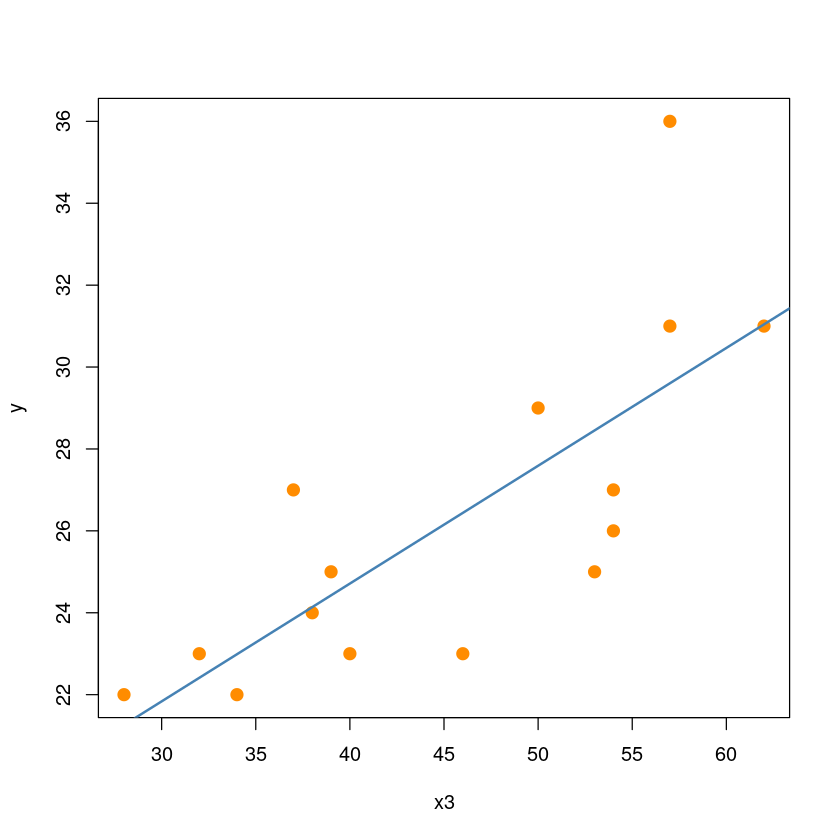
leverage
- Hmatrix
X = cbind(rep(1, nrow(dt)), dt$x3)
H = X %*% solve(t(X) %*% X) %*% t(X)
diag(H)- 0.148940660082722
- 0.151852789735798
- 0.101333670971554
- 0.258335443572213
- 0.111336203258209
- 0.0800624630708194
- 0.113488646914831
- 0.0851270363805184
- 0.241115894319237
- 0.0925972820123238
- 0.0668945724656031
- 0.113488646914831
- 0.151852789735798
- 0.103232885962691
- 0.180341014602853
- hatvalues 함수
which.max(hatvalues(model1))
hatvalues(model1)[which.max(hatvalues(model1))]
4: 4
4: 0.258335443572212
2*(1+1)/nrow(dt)
0.266666666666667
- \(h_{4} < 2\bar h\)이므로 leverage포인트로 고려할 점은 없다.
이상치
- 잔차
residual <- model1$residuals
head(residual)- 1
- -0.987254157170599
- 2
- 6.39638727103908
- 3
- -0.137925213134126
- 4
- 0.738752426774713
- 5
- 3.14974255085676
- 6
- 1.41006161897527
hist(residual)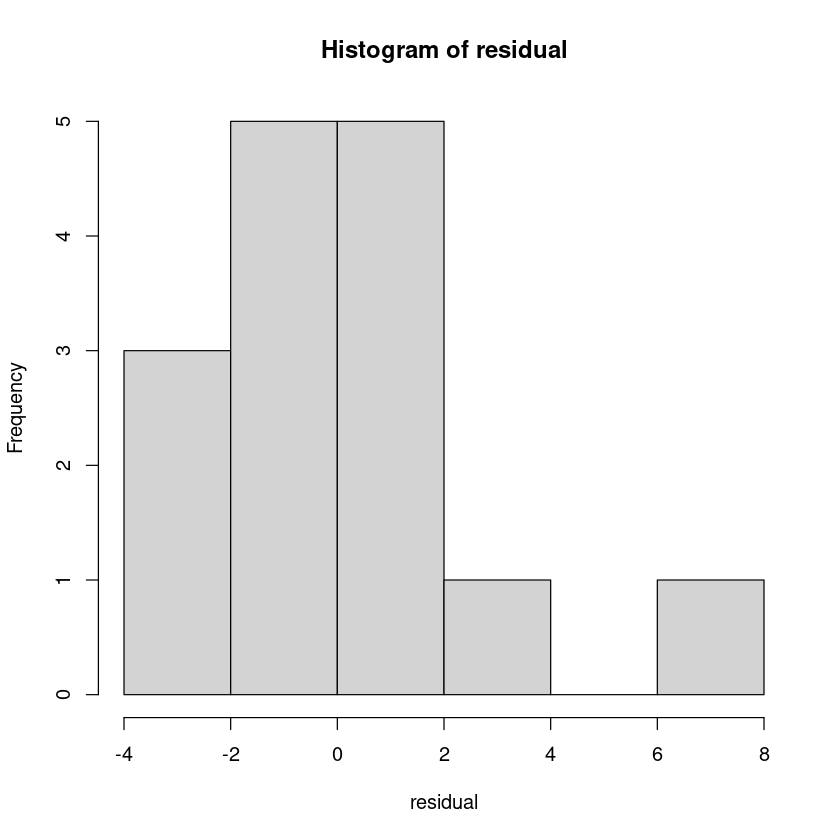
- 내적표준화된 잔차
s_residual <- rstandard(model1)
head(s_residual)- 1
- -0.397517137814801
- 2
- 2.57991821095028
- 3
- -0.0540444666750733
- 4
- 0.318641226294653
- 5
- 1.2411181316058
- 6
- 0.546091891647763
hist(s_residual)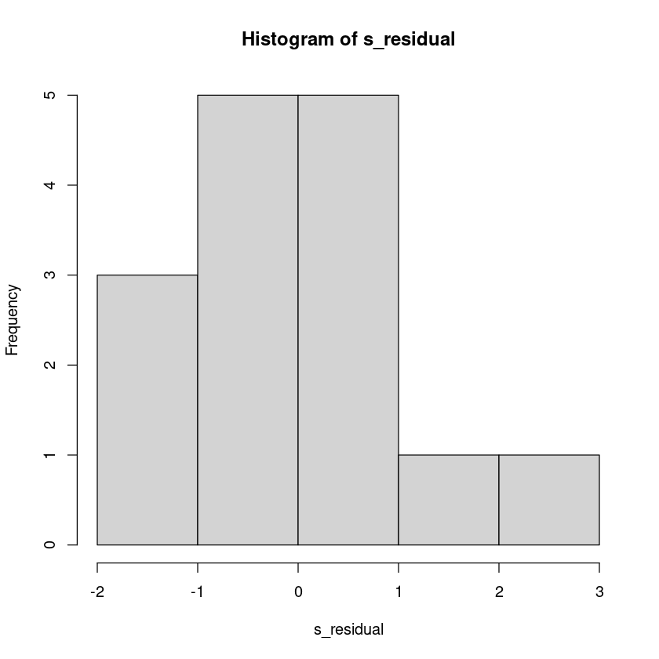
s_residual>2- 1
- FALSE
- 2
- TRUE
- 3
- FALSE
- 4
- FALSE
- 5
- FALSE
- 6
- FALSE
- 7
- FALSE
- 8
- FALSE
- 9
- FALSE
- 10
- FALSE
- 11
- FALSE
- 12
- FALSE
- 13
- FALSE
- 14
- FALSE
- 15
- FALSE
- 외적표준화된 잔차
s_residual_i <- rstudent(model1)
head(s_residual_i)- 1
- -0.384264693530971
- 2
- 3.5482500706297
- 3
- -0.0519300781139025
- 4
- 0.307343141739411
- 5
- 1.27004329309873
- 6
- 0.530791544243437
hist(s_residual_i)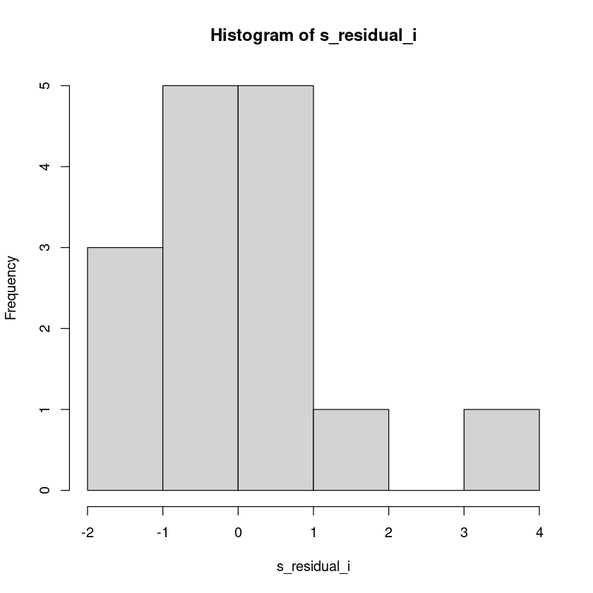
which.max(s_residual_i)
s_residual_i[which.max(s_residual_i)]
2: 2
2: 3.5482500706297
qt(0.975, 15-1-2)
2.17881282966723
- \(|r_i^*| \geq t_{\alpha/2}(12)\) 이므로 2번째 관측값은 유의수준 0.05에서 이상점이다.
plot(y~x3, dt,pch = 20,cex = 2,col = "darkorange")
abline(model1, col='steelblue', lwd=2)영향점
influence(model1)- $hat
- 1
- 0.148940660082721
- 2
- 0.151852789735798
- 3
- 0.101333670971554
- 4
- 0.258335443572212
- 5
- 0.111336203258209
- 6
- 0.0800624630708196
- 7
- 0.113488646914831
- 8
- 0.0851270363805183
- 9
- 0.241115894319237
- 10
- 0.0925972820123238
- 11
- 0.0668945724656031
- 12
- 0.113488646914831
- 13
- 0.151852789735798
- 14
- 0.103232885962691
- 15
- 0.180341014602853
- $coefficients
-
(Intercept) x3 1 -0.45742205 0.0083719544 2 -2.01160268 0.0553827321 3 -0.04287451 0.0007190015 4 0.56454256 -0.0109721950 5 1.09199851 -0.0188481935 6 -0.10046455 0.0044636533 7 0.55803792 -0.0168311648 8 -0.41549161 0.0064019062 9 0.02268944 -0.0005809430 10 0.15864320 -0.0025647941 11 -0.18216030 -0.0014000365 12 0.35441974 -0.0106897699 13 -0.43915046 0.0120905347 14 0.58437398 -0.0185257601 15 0.32415484 -0.0060864196 A matrix: 15 × 2 of type dbl - $sigma
- 1
- 2.78495746793195
- 2
- 1.95742401077584
- 3
- 2.80172466134264
- 4
- 2.79107580280945
- 5
- 2.63079972749359
- 6
- 2.76971399687302
- 7
- 2.67308548669918
- 8
- 2.75391719372408
- 9
- 2.80200497070363
- 10
- 2.79662725993432
- 11
- 2.60673085648245
- 12
- 2.75075026012413
- 13
- 2.76764179330928
- 14
- 2.59682146853761
- 15
- 2.79575824802225
- $wt.res
- 1
- -0.987254157170599
- 2
- 6.39638727103908
- 3
- -0.137925213134126
- 4
- 0.738752426774713
- 5
- 3.14974255085676
- 6
- 1.41006161897527
- 7
- -2.74060943698827
- 8
- -1.71326074111589
- 9
- -0.0419515489153378
- 10
- 0.574407022874991
- 11
- -3.4392673250612
- 12
- -1.74060943698827
- 13
- 1.39638727103908
- 14
- -3.45294167299738
- 15
- 0.588081370811178
influence.measures(model1)Influence measures of
lm(formula = y ~ x3, data = dt) :
dfb.1_ dfb.x3 dffit cov.r cook.d hat inf
1 -0.14025 0.11948 -0.16075 1.346 1.38e-02 0.1489
2 -0.87752 1.12451 1.50138 0.330 5.96e-01 0.1519 *
3 -0.01307 0.01020 -0.01744 1.305 1.65e-04 0.1013
4 0.17271 -0.15624 0.18139 1.558 1.77e-02 0.2583 *
5 0.35443 -0.28474 0.44954 1.026 9.65e-02 0.1113
6 -0.03097 0.06405 0.15659 1.218 1.30e-02 0.0801
7 0.17826 -0.25025 -0.38961 1.096 7.48e-02 0.1135
8 -0.12883 0.09239 -0.19840 1.197 2.06e-02 0.0851
9 0.00691 -0.00824 -0.00969 1.546 5.08e-05 0.2411 *
10 0.04844 -0.03645 0.06888 1.283 2.56e-03 0.0926
11 -0.05967 -0.02135 -0.36571 0.942 6.27e-02 0.0669
12 0.11002 -0.15445 -0.24046 1.230 3.02e-02 0.1135
13 -0.13549 0.17362 0.23181 1.317 2.84e-02 0.1519
14 0.19215 -0.28354 -0.47641 0.965 1.06e-01 0.1032
15 0.09900 -0.08652 0.10898 1.419 6.40e-03 0.1803 - DFFITS
dffits(model1) - 1
- -0.160752301355561
- 2
- 1.50137779530986
- 3
- -0.0174379982140392
- 4
- 0.181389340447362
- 5
- 0.449539631280775
- 6
- 0.156588296343735
- 7
- -0.389606512891271
- 8
- -0.198401773199523
- 9
- -0.00968760810666192
- 10
- 0.0688785820818028
- 11
- -0.36570800481418
- 12
- -0.240459576775504
- 13
- 0.231812126360193
- 14
- -0.476405218577437
- 15
- 0.108981268211392
which(abs(dffits(model1)) > 2*sqrt(2/(15-2)))
2: 2
- Cook’s Distance
cooks.distance(model1)- 1
- 0.0138272288214354
- 2
- 0.595845162090567
- 3
- 0.000164675041376078
- 4
- 0.0176827743279407
- 5
- 0.0964928567484941
- 6
- 0.0129769331507123
- 7
- 0.0748275851885876
- 8
- 0.0205956959313652
- 9
- 5.08340304142156e-05
- 10
- 0.00255988931413331
- 11
- 0.0626967366405896
- 12
- 0.0301835348837091
- 13
- 0.0283972104088968
- 14
- 0.105589522000774
- 15
- 0.00640451964826487
qf(0.5,2,15-2)
0.731454594627164
which(cooks.distance(model1) >qf(0.5,2,15-2))없다
- COVRATIO
covratio(model1)- 1
- 1.34567954997946
- 2
- 0.329530512740796
- 3
- 1.30536080523447
- 4
- 1.55778037598378
- 5
- 1.02622098650489
- 6
- 1.2178914729273
- 7
- 1.0964638479128
- 8
- 1.19693328273621
- 9
- 1.54641970673037
- 10
- 1.28341023214919
- 11
- 0.94206589709893
- 12
- 1.22955391198272
- 13
- 1.31702952017448
- 14
- 0.965419184972857
- 15
- 1.41903295690633
which(abs(covratio(model1)-1) > 3*(1+1)/15)- 2
- 2
- 4
- 4
- 9
- 9
- 15
- 15
summary(influence.measures(model1))Potentially influential observations of
lm(formula = y ~ x3, data = dt) :
dfb.1_ dfb.x3 dffit cov.r cook.d hat
2 -0.88 1.12_* 1.50_* 0.33_* 0.60 0.15
4 0.17 -0.16 0.18 1.56_* 0.02 0.26
9 0.01 -0.01 -0.01 1.55_* 0.00 0.24- 영향점은 2번째 관측값이다.
## 2제거 전후
plot(y~x3, dt,pch = 20,
cex = 2,col = "darkorange",
main = "2번 제거")
abline(model1, col='steelblue', lwd=2)
abline(lm(y~x3, dt[-2,]), col='red', lwd=2)
text(dt[2,], pos=2, "2")
legend('topright', legend=c("full", "del(2)"),
col=c('steelblue', 'red'), lty=1, lwd=2)
# high leverage and high influence, not outlier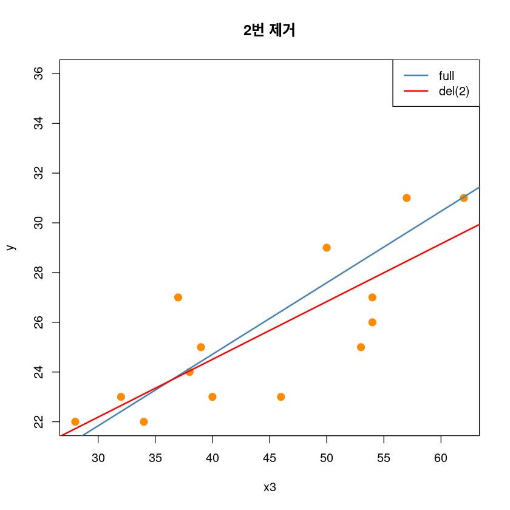
## 4제거 전후
plot(y~x3, dt,pch = 20,
cex = 2,col = "darkorange",
main = "4번 제거")
abline(model1, col='steelblue', lwd=2)
abline(lm(y~x3, dt[-4,]), col='red', lwd=2)
text(dt[-4,], pos=2, "2")
legend('topright', legend=c("full", "del(4)"),
col=c('steelblue', 'red'), lty=1, lwd=2)
# high leverage and high influence, not outlier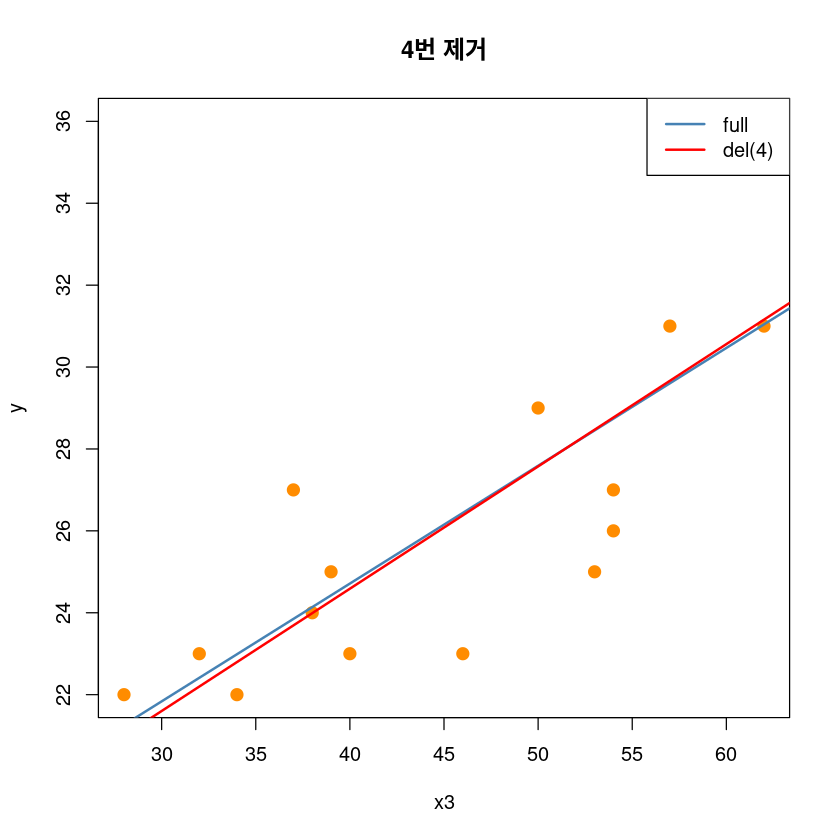
## 9제거 전후
plot(y~x3, dt,pch = 20,
cex = 2,col = "darkorange",
main = "9번 제거")
abline(model1, col='steelblue', lwd=2)
abline(lm(y~x3, dt[-9,]), col='red', lwd=2)
legend('topright', legend=c("full", "del(9)"),
col=c('steelblue', 'red'), lty=1, lwd=2)
# high leverage and high influence, not outlier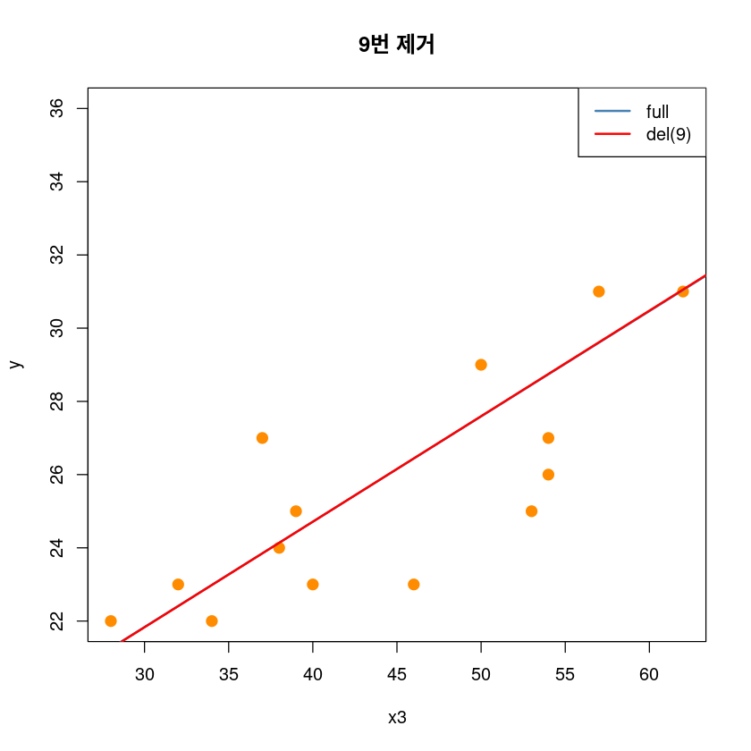
## 4,9제거 전후
plot(y~x3, dt,pch = 20,
cex = 2,col = "darkorange",
main = "4,9번 제거")
abline(model1, col='steelblue', lwd=2)
abline(lm(y~x3, dt[-c(4,9),]), col='red', lwd=2)
legend('topright', legend=c("full", "del(4,9)"),
col=c('steelblue', 'red'), lty=1, lwd=2)
# high leverage and high influence, not outlier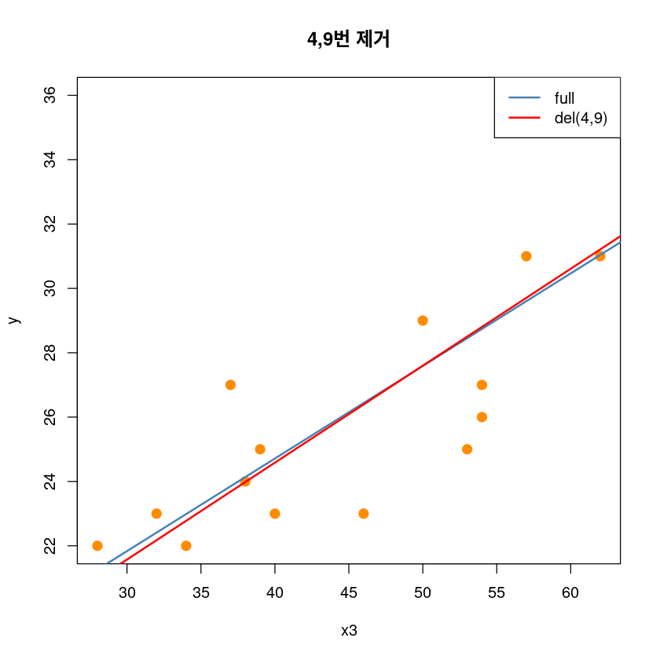
## 2,4,9제거 전후
plot(y~x3, dt,pch = 20,
cex = 2,col = "darkorange",
main = "2,4,9번 제거")
abline(model1, col='steelblue', lwd=2)
abline(lm(y~x3, dt[-c(2,4,9),]), col='red', lwd=2)
legend('topright', legend=c("full", "del(2,4,9)"),
col=c('steelblue', 'red'), lty=1, lwd=2)
# high leverage and high influence, not outlier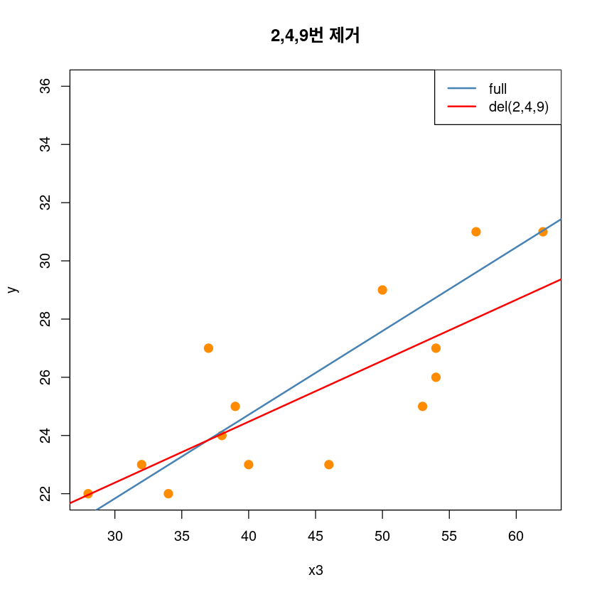
정규성
shapiro.test(model1$residuals)
Shapiro-Wilk normality test
data: model1$residuals
W = 0.93332, p-value = 0.3057회귀진단 그림
par(mfrow = c(2, 2))
plot(model1, pch=16)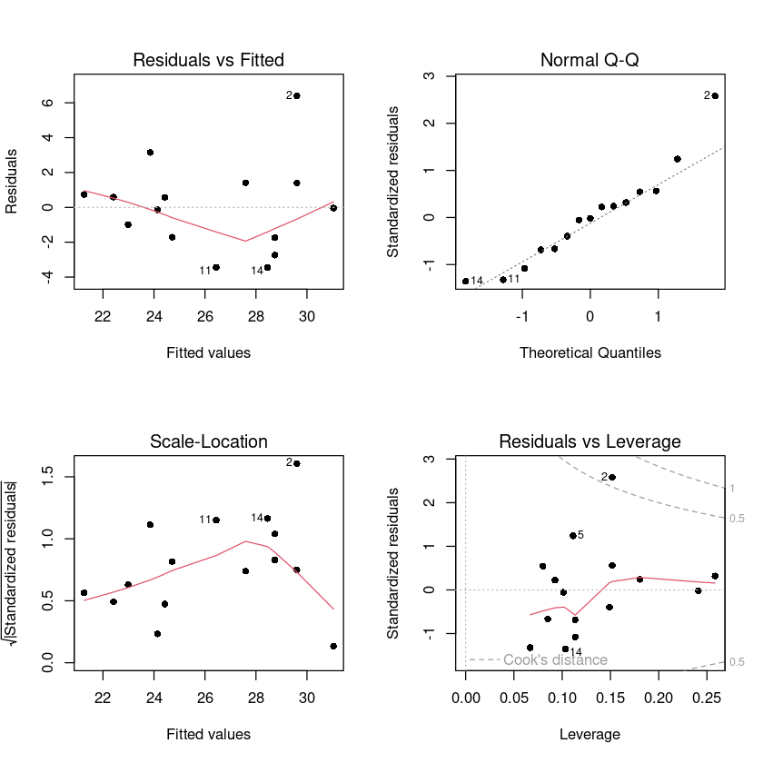
(2)
\(x_1, x_2, x_3\) 를 모두 사용하여 \(y\)에 대한 중회귀모형을 적합시키고, 이상치의 존재유무와 영향을 크게 주는 측정값이 어떤 것인가를 판정하시오.
model2 <- lm(y~x1+x2+x3,dt)
summary(model2)
Call:
lm(formula = y ~ x1 + x2 + x3, data = dt)
Residuals:
Min 1Q Median 3Q Max
-3.0723 -1.0869 -0.0208 0.9365 3.8745
Coefficients:
Estimate Std. Error t value Pr(>|t|)
(Intercept) -15.78431 14.50462 -1.088 0.2998
x1 0.15684 0.11331 1.384 0.1937
x2 0.19620 0.10215 1.921 0.0811 .
x3 0.12948 0.09083 1.425 0.1818
---
Signif. codes: 0 ‘***’ 0.001 ‘**’ 0.01 ‘*’ 0.05 ‘.’ 0.1 ‘ ’ 1
Residual standard error: 2.331 on 11 degrees of freedom
Multiple R-squared: 0.7342, Adjusted R-squared: 0.6617
F-statistic: 10.13 on 3 and 11 DF, p-value: 0.001699leverage
which.max(hatvalues(model2))
hatvalues(model2)[which.max(hatvalues(model2))]
6: 6
6: 0.467111162145579
2*(3+1)/nrow(dt)
0.533333333333333
- leverage 고려할 포인트는 업사.
이상치
- 잔차
residual2 <- model2$residuals
head(residual2)
hist(residual2)- 1
- 0.345214860348173
- 2
- 3.87452253360442
- 3
- -2.64479086930799
- 4
- -0.369359156300476
- 5
- 1.07271444722616
- 6
- 0.800293089055777
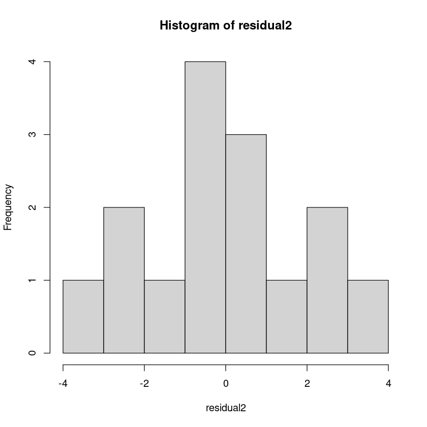
- 내적표준화된 잔차
s_residual2 <- rstandard(model2)
head(s_residual2)
s_residual>2
hist(s_residual2)- 1
- 0.168693789872619
- 2
- 2.04040961191812
- 3
- -1.36846222178994
- 4
- -0.192038604753614
- 5
- 0.527462985239622
- 6
- 0.470252444990339
- 1
- FALSE
- 2
- TRUE
- 3
- FALSE
- 4
- FALSE
- 5
- FALSE
- 6
- FALSE
- 7
- FALSE
- 8
- FALSE
- 9
- FALSE
- 10
- FALSE
- 11
- FALSE
- 12
- FALSE
- 13
- FALSE
- 14
- FALSE
- 15
- FALSE
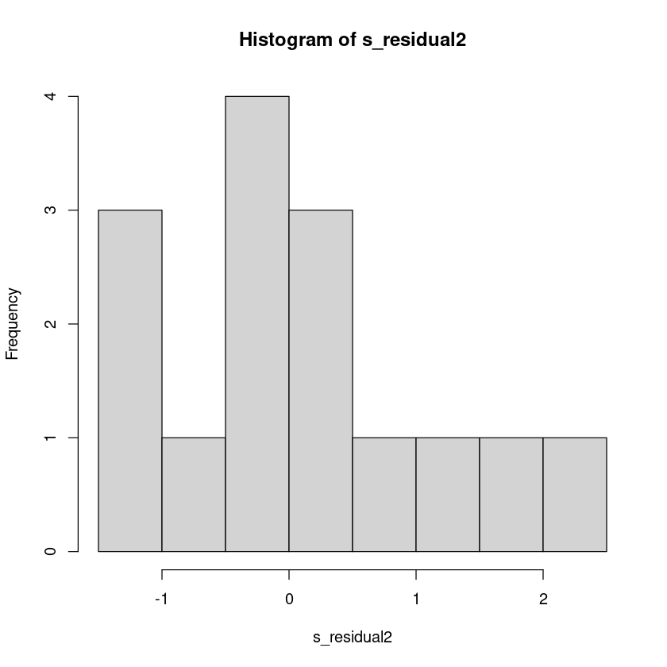
- 외적표준화된 잔차
s_residual_i2 <- rstudent(model2)
head(s_residual_i2)
hist(s_residual_i2)- 1
- 0.161051677291382
- 2
- 2.46770471155657
- 3
- -1.43239034421095
- 4
- -0.183409334396953
- 5
- 0.509399466568036
- 6
- 0.452944085994544
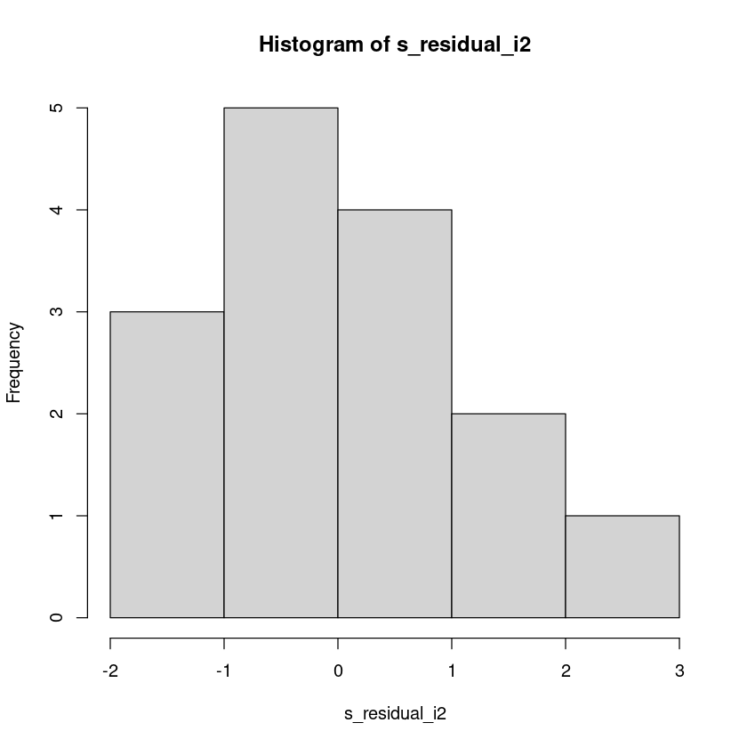
which.max(s_residual_i2)
s_residual_i[which.max(s_residual_i2)]
2: 2
2: 3.5482500706297
qt(0.975, 15-3-2)
2.22813885198627
- \(|r_i^*| \geq t_{\alpha/2}(10)\) 이므로 2번째 관측값은 유의수준 0.05에서 이상점이다.
영향점
influence(model2)- $hat
- 1
- 0.229484482984878
- 2
- 0.336559048244901
- 3
- 0.312745387413974
- 4
- 0.31935404183557
- 5
- 0.238999578272863
- 6
- 0.467111162145579
- 7
- 0.176674868362933
- 8
- 0.262199425033544
- 9
- 0.414083032167575
- 10
- 0.19055339953678
- 11
- 0.0731668365931882
- 12
- 0.174623444618773
- 13
- 0.197413593761242
- 14
- 0.241923572696132
- 15
- 0.365108126332067
- $coefficients
-
(Intercept) x1 x2 x3 1 0.95354693 0.0003764930 -5.561428e-03 -0.0014501180 2 -13.93952031 0.0672978312 8.377466e-02 -0.0248399264 3 4.69552573 -0.0704991936 -3.644734e-02 0.0705780525 4 0.50943934 0.0007684142 -5.873357e-03 0.0076533361 5 -2.27767961 0.0105499531 1.862708e-02 -0.0200833113 6 -4.18168476 -0.0332209276 3.130321e-02 0.0117532167 7 -2.20897093 0.0037053698 1.765648e-02 -0.0175478830 8 -0.01539851 0.0005690967 2.732094e-05 -0.0002319326 9 -0.51557236 -0.0263081084 9.369868e-03 -0.0028197702 10 0.12758711 0.0019405994 -7.974601e-04 -0.0013464759 11 -1.76717565 -0.0009954571 1.149237e-02 -0.0048224698 12 -0.86864768 -0.0001014964 7.037690e-03 -0.0060239702 13 2.27737859 -0.0219351895 -2.102859e-02 0.0439849174 14 3.66063758 0.0653541960 -2.631196e-02 -0.0454527846 15 13.67495355 -0.0124352729 -8.212831e-02 -0.0017947153 A matrix: 15 × 4 of type dbl - $sigma
- 1
- 2.44193182869043
- 2
- 1.92763082719566
- 3
- 2.22726104086183
- 4
- 2.44099449377856
- 5
- 2.41397737377572
- 6
- 2.42039452193581
- 7
- 2.39715919509951
- 8
- 2.44508463698753
- 9
- 2.42314403118888
- 10
- 2.44479643924596
- 11
- 2.22712958167362
- 12
- 2.43788055286261
- 13
- 2.26047895469207
- 14
- 2.20980300839363
- 15
- 2.16577831202649
- $wt.res
- 1
- 0.345214860348173
- 2
- 3.87452253360442
- 3
- -2.64479086930799
- 4
- -0.369359156300476
- 5
- 1.07271444722616
- 6
- 0.800293089055777
- 7
- -1.38244275079492
- 8
- -0.0208410556291935
- 9
- -0.79131150566298
- 10
- 0.109012275312978
- 11
- -3.07226152705352
- 12
- -0.539287518287805
- 13
- 2.64051702167739
- 14
- -2.88148775547281
- 15
- 2.85950791128479
influence.measures(model2)Influence measures of
lm(formula = y ~ x1 + x2 + x3, data = dt) :
dfb.1_ dfb.x1 dfb.x2 dfb.x3 dffit cov.r cook.d hat inf
1 0.06276 0.003172 -0.051979 -0.01524 0.08789 1.881 2.12e-03 0.2295
2 -1.16230 0.718336 0.991882 -0.33074 1.75761 0.329 5.28e-01 0.3366 *
3 0.33885 -0.651274 -0.373479 0.81332 -0.96627 1.010 2.13e-01 0.3127
4 0.03354 0.006477 -0.054915 0.08047 -0.12563 2.122 4.33e-03 0.3194 *
5 -0.15165 0.089922 0.176110 -0.21353 0.28547 1.737 2.18e-02 0.2390
6 -0.27769 -0.282407 0.295171 0.12463 0.42407 2.533 4.85e-02 0.4671 *
7 -0.14811 0.031804 0.168104 -0.18788 -0.29442 1.518 2.29e-02 0.1767
8 -0.00101 0.004789 0.000255 -0.00243 -0.00592 1.984 9.62e-06 0.2622
9 -0.03420 -0.223389 0.088252 -0.02987 -0.35865 2.325 3.47e-02 0.4141 *
10 0.00839 0.016332 -0.007445 -0.01414 0.02405 1.807 1.59e-04 0.1906
11 -0.12753 -0.009197 0.117770 -0.05558 -0.40259 0.748 3.70e-02 0.0732
12 -0.05727 -0.000857 0.065885 -0.06342 -0.11200 1.732 3.43e-03 0.1746
13 0.16193 -0.199660 -0.212315 0.49942 0.64667 0.973 9.83e-02 0.1974
14 0.26625 0.608514 -0.271751 -0.52792 -0.84604 0.860 1.61e-01 0.2419
15 1.01486 -0.118139 -0.865466 -0.02127 1.25657 0.874 3.41e-01 0.3651 *- DFFITS
dffits(model2) - 1
- 0.0878923790933185
- 2
- 1.75761070078296
- 3
- -0.966268917673672
- 4
- -0.125631055448568
- 5
- 0.285472714339999
- 6
- 0.424068881254535
- 7
- -0.294419313015607
- 8
- -0.00591565303872599
- 9
- -0.358654177245365
- 10
- 0.0240465539273412
- 11
- -0.402594900995498
- 12
- -0.111997181258085
- 13
- 0.646673748175155
- 14
- -0.846036927571321
- 15
- 1.25657461898781
which(abs(dffits(model2)) > 2*sqrt(2/(15-3-1)))- 2
- 2
- 3
- 3
- 15
- 15
- Cook’s distance
cooks.distance(model2)- 1
- 0.00211889841023739
- 2
- 0.527999760572049
- 3
- 0.213048697653186
- 4
- 0.00432581796350647
- 5
- 0.0218442039453938
- 6
- 0.0484602617041985
- 7
- 0.0229122092214353
- 8
- 9.62351672584315e-06
- 9
- 0.0347416842517463
- 10
- 0.000158976058928977
- 11
- 0.0369801047117493
- 12
- 0.00342909608500354
- 13
- 0.0982906080447196
- 14
- 0.160777911639787
- 15
- 0.340678864434841
qf(0.5,3+1,15-3-1)
0.893156955577709
which(cooks.distance(model2) >qf(0.5,4,11))없다
- covratio
covratio(model2)- 1
- 1.88056935548212
- 2
- 0.32929951279886
- 3
- 1.0098427682077
- 4
- 2.12234306958682
- 5
- 1.73653332829024
- 6
- 2.53311628226267
- 7
- 1.51777046887204
- 8
- 1.98433341199223
- 9
- 2.32487827053021
- 10
- 1.80699058897987
- 11
- 0.748453434660152
- 12
- 1.73240614043161
- 13
- 0.973451691520289
- 14
- 0.859642643137438
- 15
- 0.873805339356644
which(abs(covratio(model2)-1) > 3*(3+1)/15)- 1
- 1
- 4
- 4
- 6
- 6
- 8
- 8
- 9
- 9
- 10
- 10
정규성
shapiro.test(model2$residuals)
Shapiro-Wilk normality test
data: model2$residuals
W = 0.95818, p-value = 0.6608회귀진단 그림
par(mfrow = c(2, 2))
plot(model2, pch=16)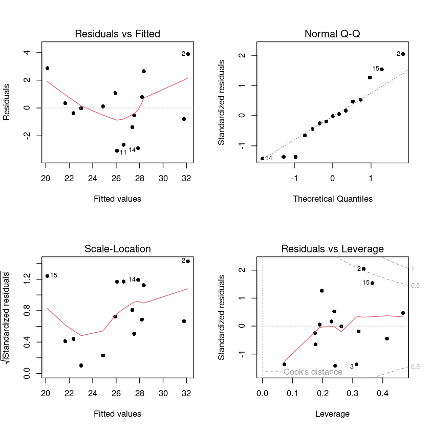
2번
어떤 화학공장에서 \(NH_3\)를 \(HNO_3\)로 산화시키는 공정을 가지고 있다. 이 산화공정에 미치는 중요한 요인으로 생각되어지는 변수는
\(x_1\) = 작업속도
\(x_2\) = 냉각수의 온도
\(x_3\) = 흡수액 속의 \(HNO_3\)의 농도
이다. \(y\)는 \(NH_3\)를 \(HNO_3\)로 바꿀 때 손실되는 \(NH_3\)의 %로 잡아주었다. 21일간의 공정기간 중에 얻은 자료는 앞의 것과 같다.
| 실험번호 | \(x_1\) | \(x_2\) | \(x_3\) | \(y\) |
|---|---|---|---|---|
| 1 | 80 | 27 | 89 | 42 |
| 2 | 80 | 27 | 88 | 37 |
| 3 | 75 | 25 | 90 | 37 |
| 4 | 62 | 24 | 87 | 28 |
| 5 | 62 | 22 | 87 | 18 |
| 6 | 62 | 23 | 87 | 18 |
| 7 | 62 | 24 | 93 | 19 |
| 8 | 62 | 24 | 93 | 20 |
| 9 | 58 | 23 | 87 | 15 |
| 10 | 58 | 18 | 90 | 14 |
| 11 | 58 | 18 | 89 | 14 |
| 12 | 58 | 17 | 88 | 13 |
| 13 | 58 | 18 | 82 | 11 |
| 14 | 58 | 19 | 93 | 12 |
| 15 | 50 | 18 | 89 | 8 |
| 16 | 50 | 18 | 86 | 7 |
| 17 | 50 | 19 | 72 | 8 |
| 18 | 50 | 19 | 79 | 8 |
| 19 | 50 | 20 | 80 | 9 |
| 20 | 56 | 20 | 82 | 15 |
| 21 | 70 | 20 | 91 | 15 |
dt2 <- data.frame(x1 = c(80,80,75,62,62,62,62,62,58,58,58,58,58,58,50,50,50,50,50,56,70),
x2 = c(27,27,25,24,22,23,24,24,23,18,18,17,18,19,18,18,19,19,20,20,20),
x3 = c(89,88,90,87,87,87,93,93,87,90,89,88,82,93,89,86,72,79,80,82,91),
y = c(42,37,37,28,18,18,19,20,15,14,14,13,11,12,8,7,8,8,9,15,15))
(1)
중회귀모형
\(y_i = β_0 + β_1x_{i1} + β_2x_{i2} + β_3x_{i3} + ϵ_i\)
\(i = 1, 2, · · · , 21\)
$ϵ_i \(∼\)N(0, σ^2_ϵ)$
이 데이터간의 관계를 설명하는 데 충분하다고 가정하고 다음의 물음에 답하시오. 유의수준 α = 0.05를 사용하여라.
pairs(dt2, pch=16)
cor(dt2)| x1 | x2 | x3 | y | |
|---|---|---|---|---|
| x1 | 1.0000000 | 0.7818523 | 0.4885669 | 0.9196635 |
| x2 | 0.7818523 | 1.0000000 | 0.3078454 | 0.8755044 |
| x3 | 0.4885669 | 0.3078454 | 1.0000000 | 0.3776617 |
| y | 0.9196635 | 0.8755044 | 0.3776617 | 1.0000000 |
A matrix: 4 × 4 of type dbl
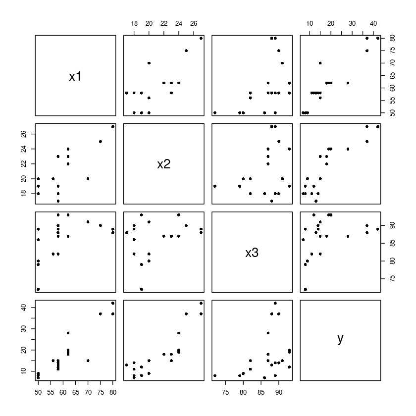
y와 x1의 상관관계가 높아보인다. y와 x2도 높아보이낟.
x1과 x2도 높다!!
m <- lm(y~., dt2) ##FM
summary(m)
Call:
lm(formula = y ~ ., data = dt2)
Residuals:
Min 1Q Median 3Q Max
-7.4829 -1.7449 -0.4688 2.3497 5.7224
Coefficients:
Estimate Std. Error t value Pr(>|t|)
(Intercept) -42.5557 12.7798 -3.330 0.003965 **
x1 0.7107 0.1416 5.018 0.000106 ***
x2 1.2610 0.3768 3.347 0.003823 **
x3 -0.1092 0.1632 -0.669 0.512537
---
Signif. codes: 0 ‘***’ 0.001 ‘**’ 0.01 ‘*’ 0.05 ‘.’ 0.1 ‘ ’ 1
Residual standard error: 3.289 on 17 degrees of freedom
Multiple R-squared: 0.9111, Adjusted R-squared: 0.8954
F-statistic: 58.08 on 3 and 17 DF, p-value: 3.83e-09(a)
add1/drop1 함수를 이용하여, 부분F검정통계량 값을 통한 후진제거법을 시행하여 가장 적절한 회귀모형을 구하여라.
drop1(m,test="F")| Df | Sum of Sq | RSS | AIC | F value | Pr(>F) | |
|---|---|---|---|---|---|---|
| <dbl> | <dbl> | <dbl> | <dbl> | <dbl> | <dbl> | |
| <none> | NA | NA | 183.9537 | 53.57340 | NA | NA |
| x1 | 1 | 272.464536 | 456.4183 | 70.65663 | 25.1796878 | 0.0001055439 |
| x2 | 1 | 121.206721 | 305.1604 | 62.20262 | 11.2012647 | 0.0038231136 |
| x3 | 1 | 4.841619 | 188.7953 | 52.11896 | 0.4474361 | 0.5125370733 |
A anova: 4 × 6
qf(0.95,1,21-3-1)
4.45132177246813
\(F_L < F_{\alpha B}\) 이므로 설명변수 x3제거
m1 <- update(m, ~ . -x3)
summary(m1)
Call:
lm(formula = y ~ x1 + x2, data = dt2)
Residuals:
Min 1Q Median 3Q Max
-7.5290 -1.7505 0.1894 2.1156 5.6588
Coefficients:
Estimate Std. Error t value Pr(>|t|)
(Intercept) -50.3588 5.1383 -9.801 1.22e-08 ***
x1 0.6712 0.1267 5.298 4.90e-05 ***
x2 1.2954 0.3675 3.525 0.00242 **
---
Signif. codes: 0 ‘***’ 0.001 ‘**’ 0.01 ‘*’ 0.05 ‘.’ 0.1 ‘ ’ 1
Residual standard error: 3.239 on 18 degrees of freedom
Multiple R-squared: 0.9088, Adjusted R-squared: 0.8986
F-statistic: 89.64 on 2 and 18 DF, p-value: 4.382e-10pvalue의 값도 유의하고 \(R^2\)도 약 90%의 설명력을 가진다. 각각의 회귀계수도 유의하다.
\(y=-50.3588 + 0.6712 x_1 + 1.2954 x_2\)
drop1(m1, test = "F")| Df | Sum of Sq | RSS | AIC | F value | Pr(>F) | |
|---|---|---|---|---|---|---|
| <dbl> | <dbl> | <dbl> | <dbl> | <dbl> | <dbl> | |
| <none> | NA | NA | 188.7953 | 52.11896 | NA | NA |
| x1 | 1 | 294.3553 | 483.1506 | 69.85193 | 28.06423 | 0.0000489797 |
| x2 | 1 | 130.3208 | 319.1161 | 61.14168 | 12.42496 | 0.0024191459 |
A anova: 3 × 6
qf(0.95,1,21-2-1)
4.41387341917057
- F-value값이 작은 x2를 제거하려고 봤더니 pr값이 0.002419로 유의하므로 제거하지 않는다.
(b)
add1/drop1 함수를 이용하여, 부분F검정통계량 값을 통한 전진선택법을 시행하여 가장 적절한 회귀모형을 구하여라.
m0 = lm(y ~ 1, data = dt2)
add1(m0, scope = y ~ x1 + x2 + x3, test = "F")| Df | Sum of Sq | RSS | AIC | F value | Pr(>F) | |
|---|---|---|---|---|---|---|
| <dbl> | <dbl> | <dbl> | <dbl> | <dbl> | <dbl> | |
| <none> | NA | NA | 2069.2381 | 98.39868 | NA | NA |
| x1 | 1 | 1750.1220 | 319.1161 | 61.14168 | 104.201315 | 3.774296e-09 |
| x2 | 1 | 1586.0875 | 483.1506 | 69.85193 | 62.373224 | 2.028017e-07 |
| x3 | 1 | 295.1321 | 1774.1060 | 97.16712 | 3.160752 | 9.143800e-02 |
A anova: 4 × 6
- F값이 큰 x1을 추가하자. 심지어 유의하당
qf(0.95,1,21-1-1)
4.3807496923318
m1 <- update(m0, ~.+x1)
summary(m1)
Call:
lm(formula = y ~ x1, data = dt2)
Residuals:
Min 1Q Median 3Q Max
-12.2896 -1.1272 -0.0459 1.1166 8.8728
Coefficients:
Estimate Std. Error t value Pr(>|t|)
(Intercept) -44.13202 6.10586 -7.228 7.31e-07 ***
x1 1.02031 0.09995 10.208 3.77e-09 ***
---
Signif. codes: 0 ‘***’ 0.001 ‘**’ 0.01 ‘*’ 0.05 ‘.’ 0.1 ‘ ’ 1
Residual standard error: 4.098 on 19 degrees of freedom
Multiple R-squared: 0.8458, Adjusted R-squared: 0.8377
F-statistic: 104.2 on 1 and 19 DF, p-value: 3.774e-09add1(m1,
scope = y ~ x1 + x2 + x3,
test = "F")| Df | Sum of Sq | RSS | AIC | F value | Pr(>F) | |
|---|---|---|---|---|---|---|
| <dbl> | <dbl> | <dbl> | <dbl> | <dbl> | <dbl> | |
| <none> | NA | NA | 319.1161 | 61.14168 | NA | NA |
| x2 | 1 | 130.32077 | 188.7953 | 52.11896 | 12.4249569 | 0.002419146 |
| x3 | 1 | 13.95567 | 305.1604 | 62.20262 | 0.8231803 | 0.376238733 |
A anova: 3 × 6
- x2의 Fvalue가 크고 유의하므로 추가하자.
m2 <- update(m1, ~ . +x2)
summary(m2)
Call:
lm(formula = y ~ x1 + x2, data = dt2)
Residuals:
Min 1Q Median 3Q Max
-7.5290 -1.7505 0.1894 2.1156 5.6588
Coefficients:
Estimate Std. Error t value Pr(>|t|)
(Intercept) -50.3588 5.1383 -9.801 1.22e-08 ***
x1 0.6712 0.1267 5.298 4.90e-05 ***
x2 1.2954 0.3675 3.525 0.00242 **
---
Signif. codes: 0 ‘***’ 0.001 ‘**’ 0.01 ‘*’ 0.05 ‘.’ 0.1 ‘ ’ 1
Residual standard error: 3.239 on 18 degrees of freedom
Multiple R-squared: 0.9088, Adjusted R-squared: 0.8986
F-statistic: 89.64 on 2 and 18 DF, p-value: 4.382e-10add1(m2,
scope = y ~ x1 + x2 + x3,
test = "F") | Df | Sum of Sq | RSS | AIC | F value | Pr(>F) | |
|---|---|---|---|---|---|---|
| <dbl> | <dbl> | <dbl> | <dbl> | <dbl> | <dbl> | |
| <none> | NA | NA | 188.7953 | 52.11896 | NA | NA |
| x3 | 1 | 4.841619 | 183.9537 | 53.57340 | 0.4474361 | 0.5125371 |
A anova: 2 × 6
- x3의 pr값도 유의수준 0.05에서 유의하지 않다. 모형에 포함될 수 없으므로 멈춘다. 최종모형은 x1과 x2를 포함한 모형이다.
(c)
add1/drop1 함수를 이용하여, 부분F검정통계량 값을 통한 단계적 전진선택법을 시행하여 가장 적절한 회귀모형을 구하여라.
m0 = lm(y ~ 1, data = dt2)add1(m0,
scope = y ~ x1 + x2 + x3,
test = "F") | Df | Sum of Sq | RSS | AIC | F value | Pr(>F) | |
|---|---|---|---|---|---|---|
| <dbl> | <dbl> | <dbl> | <dbl> | <dbl> | <dbl> | |
| <none> | NA | NA | 2069.2381 | 98.39868 | NA | NA |
| x1 | 1 | 1750.1220 | 319.1161 | 61.14168 | 104.201315 | 3.774296e-09 |
| x2 | 1 | 1586.0875 | 483.1506 | 69.85193 | 62.373224 | 2.028017e-07 |
| x3 | 1 | 295.1321 | 1774.1060 | 97.16712 | 3.160752 | 9.143800e-02 |
A anova: 4 × 6
- Fvalue가 크고 pr값이 유의하 x1을 추가하자.
m1 <- update(m0, ~ . +x1)
summary(m1)
Call:
lm(formula = y ~ x1, data = dt2)
Residuals:
Min 1Q Median 3Q Max
-12.2896 -1.1272 -0.0459 1.1166 8.8728
Coefficients:
Estimate Std. Error t value Pr(>|t|)
(Intercept) -44.13202 6.10586 -7.228 7.31e-07 ***
x1 1.02031 0.09995 10.208 3.77e-09 ***
---
Signif. codes: 0 ‘***’ 0.001 ‘**’ 0.01 ‘*’ 0.05 ‘.’ 0.1 ‘ ’ 1
Residual standard error: 4.098 on 19 degrees of freedom
Multiple R-squared: 0.8458, Adjusted R-squared: 0.8377
F-statistic: 104.2 on 1 and 19 DF, p-value: 3.774e-09add1(m1,
scope = y ~ x1 + x2 + x3,
test = "F") | Df | Sum of Sq | RSS | AIC | F value | Pr(>F) | |
|---|---|---|---|---|---|---|
| <dbl> | <dbl> | <dbl> | <dbl> | <dbl> | <dbl> | |
| <none> | NA | NA | 319.1161 | 61.14168 | NA | NA |
| x2 | 1 | 130.32077 | 188.7953 | 52.11896 | 12.4249569 | 0.002419146 |
| x3 | 1 | 13.95567 | 305.1604 | 62.20262 | 0.8231803 | 0.376238733 |
A anova: 3 × 6
- x2의 Fvalue가 더 크고 pr값이 유의하므로 x2선택
m2 <- update(m1, ~ . +x2)- x1이 있는 모형에 x2를 추가함
drop1(m2, test = "F")| Df | Sum of Sq | RSS | AIC | F value | Pr(>F) | |
|---|---|---|---|---|---|---|
| <dbl> | <dbl> | <dbl> | <dbl> | <dbl> | <dbl> | |
| <none> | NA | NA | 188.7953 | 52.11896 | NA | NA |
| x1 | 1 | 294.3553 | 483.1506 | 69.85193 | 28.06423 | 0.0000489797 |
| x2 | 1 | 130.3208 | 319.1161 | 61.14168 | 12.42496 | 0.0024191459 |
A anova: 3 × 6
- x1을 보자. 제거할까? 유의하므로 제거하지 말자.
add1(m2,
scope = y ~ x1 + x2 + x3,
test = "F")| Df | Sum of Sq | RSS | AIC | F value | Pr(>F) | |
|---|---|---|---|---|---|---|
| <dbl> | <dbl> | <dbl> | <dbl> | <dbl> | <dbl> | |
| <none> | NA | NA | 188.7953 | 52.11896 | NA | NA |
| x3 | 1 | 4.841619 | 183.9537 | 53.57340 | 0.4474361 | 0.5125371 |
A anova: 2 × 6
- 유의수준 0.05에서는 유의하지 않으므로 x3를 추가하지 않는다.
summary(m2)
Call:
lm(formula = y ~ x1 + x2, data = dt2)
Residuals:
Min 1Q Median 3Q Max
-7.5290 -1.7505 0.1894 2.1156 5.6588
Coefficients:
Estimate Std. Error t value Pr(>|t|)
(Intercept) -50.3588 5.1383 -9.801 1.22e-08 ***
x1 0.6712 0.1267 5.298 4.90e-05 ***
x2 1.2954 0.3675 3.525 0.00242 **
---
Signif. codes: 0 ‘***’ 0.001 ‘**’ 0.01 ‘*’ 0.05 ‘.’ 0.1 ‘ ’ 1
Residual standard error: 3.239 on 18 degrees of freedom
Multiple R-squared: 0.9088, Adjusted R-squared: 0.8986
F-statistic: 89.64 on 2 and 18 DF, p-value: 4.382e-10(2)
leaps 패키지의 regsubsets 함수를 이용하여, 다음의 물음에 답하여라.
library(leaps)(a)
전역탐색법을 사용하여, 가능한 모든 회귀모형에 대하여 \(MSE_p, R^2_p, R^2_{adj,p}, C_p\) 를 구하여라. (regsubsets 사용시, 옵션에서 nbest=1 대신에 적당한 숫자를 입력하면 모든 회귀모형에 대한 결과를 확인할 수 있다.)
fit<-regsubsets(y~., data=dt2, nbest=6,
method='exhaustive',
)
summary(fit)
with(summary(fit),
round(cbind(which,rss,rsq,adjr2,cp,bic),3))Subset selection object
Call: regsubsets.formula(y ~ ., data = dt2, nbest = 6, method = "exhaustive",
)
3 Variables (and intercept)
Forced in Forced out
x1 FALSE FALSE
x2 FALSE FALSE
x3 FALSE FALSE
6 subsets of each size up to 3
Selection Algorithm: exhaustive
x1 x2 x3
1 ( 1 ) "*" " " " "
1 ( 2 ) " " "*" " "
1 ( 3 ) " " " " "*"
2 ( 1 ) "*" "*" " "
2 ( 2 ) "*" " " "*"
2 ( 3 ) " " "*" "*"
3 ( 1 ) "*" "*" "*"| (Intercept) | x1 | x2 | x3 | rss | rsq | adjr2 | cp | bic | |
|---|---|---|---|---|---|---|---|---|---|
| 1 | 1 | 1 | 0 | 0 | 319.116 | 0.846 | 0.838 | 12.491 | -33.168 |
| 1 | 1 | 0 | 1 | 0 | 483.151 | 0.767 | 0.754 | 27.650 | -24.458 |
| 1 | 1 | 0 | 0 | 1 | 1774.106 | 0.143 | 0.098 | 146.953 | 2.857 |
| 2 | 1 | 1 | 1 | 0 | 188.795 | 0.909 | 0.899 | 2.447 | -41.146 |
| 2 | 1 | 1 | 0 | 1 | 305.160 | 0.853 | 0.836 | 13.201 | -31.062 |
| 2 | 1 | 0 | 1 | 1 | 456.418 | 0.779 | 0.755 | 27.180 | -22.608 |
| 3 | 1 | 1 | 1 | 1 | 183.954 | 0.911 | 0.895 | 4.000 | -38.647 |
A matrix: 7 × 9 of type dbl
(b)
\(p = 1, p = 2, p = 3\)에서 각각 가장 적절한 회귀모형을 구하여라. (기준 : \(R^2_p\))
p=1인 경우에 \(R_2\) 값이 가장 큰(0.846) 모형을 선택한다. 즉 \(y=\beta_0+\beta_1x_1\)
p=2인 경우에는 \(y=\beta_0+\beta_1x_1+\beta_2x_2\)
p=3인 경우에는 \(y=\beta_0+\beta_1x_1+\beta_2x_2+\beta_3x_3\)
fit<-regsubsets(y~., data=dt2, nbest=1,
method='exhaustive',
)
summary(fit)
with(summary(fit),
round(cbind(which,rss,rsq,adjr2,cp,bic),3))Subset selection object
Call: regsubsets.formula(y ~ ., data = dt2, nbest = 1, method = "exhaustive",
)
3 Variables (and intercept)
Forced in Forced out
x1 FALSE FALSE
x2 FALSE FALSE
x3 FALSE FALSE
1 subsets of each size up to 3
Selection Algorithm: exhaustive
x1 x2 x3
1 ( 1 ) "*" " " " "
2 ( 1 ) "*" "*" " "
3 ( 1 ) "*" "*" "*"| (Intercept) | x1 | x2 | x3 | rss | rsq | adjr2 | cp | bic | |
|---|---|---|---|---|---|---|---|---|---|
| 1 | 1 | 1 | 0 | 0 | 319.116 | 0.846 | 0.838 | 12.491 | -33.168 |
| 2 | 1 | 1 | 1 | 0 | 188.795 | 0.909 | 0.899 | 2.447 | -41.146 |
| 3 | 1 | 1 | 1 | 1 | 183.954 | 0.911 | 0.895 | 4.000 | -38.647 |
A matrix: 3 × 9 of type dbl
(c)
위에서 구한 모형 중 가장 적절한 회귀모형을 선택하여라.
adjr이 제일 높은 모형-> y=x1+x2
rss는 작은것이 제일 좋은데 3개를 선택한 모형은 원래 제일 작음.. x1 1개만 선택한 모형의 rss는 319이고 x1과 x2를 선택한 모형의 rss는 188로 급격히 감소함. x3까ㅣ 추가한것은 183으로 별차이가 없으므로 x1+x2를 선택한 모형을 고르는 것이 좋아보인다. bic값도 제일 낮음
(d)
\(C_p\)의 경우 \(C_p ≤ p + 1\) 이면 좋은 모형으로 판정하고, 이를 만족할 때 변수의 수가 가장 적은 모형을 선택하는 것이 좋다고 알려져 있다. \(C_p\) 를 이용했을 때, \(p = 1, p = 2, p = 3\)에서 각각 가장 좋은 모형을 선택하여라.
p=1일때는 x1선택한 모형이 제일작지만, cp>2이므로 좋은 모형이 아니다.
p=2일때는 x1+x2
p=3일때는 x1+x2+x3
fit<-regsubsets(y~., data=dt2, nbest=6,
method='exhaustive',
)
summary(fit)
with(summary(fit),
round(cbind(which,rss,rsq,adjr2,cp,bic),3))Subset selection object
Call: regsubsets.formula(y ~ ., data = dt2, nbest = 6, method = "exhaustive",
)
3 Variables (and intercept)
Forced in Forced out
x1 FALSE FALSE
x2 FALSE FALSE
x3 FALSE FALSE
6 subsets of each size up to 3
Selection Algorithm: exhaustive
x1 x2 x3
1 ( 1 ) "*" " " " "
1 ( 2 ) " " "*" " "
1 ( 3 ) " " " " "*"
2 ( 1 ) "*" "*" " "
2 ( 2 ) "*" " " "*"
2 ( 3 ) " " "*" "*"
3 ( 1 ) "*" "*" "*"| (Intercept) | x1 | x2 | x3 | rss | rsq | adjr2 | cp | bic | |
|---|---|---|---|---|---|---|---|---|---|
| 1 | 1 | 1 | 0 | 0 | 319.116 | 0.846 | 0.838 | 12.491 | -33.168 |
| 1 | 1 | 0 | 1 | 0 | 483.151 | 0.767 | 0.754 | 27.650 | -24.458 |
| 1 | 1 | 0 | 0 | 1 | 1774.106 | 0.143 | 0.098 | 146.953 | 2.857 |
| 2 | 1 | 1 | 1 | 0 | 188.795 | 0.909 | 0.899 | 2.447 | -41.146 |
| 2 | 1 | 1 | 0 | 1 | 305.160 | 0.853 | 0.836 | 13.201 | -31.062 |
| 2 | 1 | 0 | 1 | 1 | 456.418 | 0.779 | 0.755 | 27.180 | -22.608 |
| 3 | 1 | 1 | 1 | 1 | 183.954 | 0.911 | 0.895 | 4.000 | -38.647 |
A matrix: 7 × 9 of type dbl
(e)
위에서 선택한 모형 중 \(C_p\)를 기준으로 가장 적절한 회귀모형을 선택하여라
p=2일때 x1+x2를 선택한 모형이 가장 적절하다. p=1인 경우에는 cp<p+1이므로 좋은 모형이라고 할 수 없다.
(3)
일차 선형항(lenear terms)만으로는 충분하지 않다고 생각하고 이차다항회귀모형
\(y = β_0 + β_1x_1 + β_2x_2 + β_3x_3 + β_4x^2_1 + β_5x^2_2 + β_6x^2_3 + β_7x_1x_2 + β_8x_1x_3 + β_9x_2x_3 + ϵ\)을 가정하였다. 다음 물음에 답하여라.
dt2$x_1 <- dt2$x1^2
dt2$x_2 <- dt2$x2^2
dt2$x_3 <- dt2$x3^2
dt2$x1x2 <- dt2$x1 * dt2$x2
dt2$x1x3 <- dt2$x1 * dt2$x1
dt2$x2x3 <- dt2$x2 * dt2$x3
head(dt2)| x1 | x2 | x3 | y | x_1 | x_2 | x_3 | x1x2 | x1x3 | x2x3 | |
|---|---|---|---|---|---|---|---|---|---|---|
| <dbl> | <dbl> | <dbl> | <dbl> | <dbl> | <dbl> | <dbl> | <dbl> | <dbl> | <dbl> | |
| 1 | 80 | 27 | 89 | 42 | 6400 | 729 | 7921 | 2160 | 6400 | 2403 |
| 2 | 80 | 27 | 88 | 37 | 6400 | 729 | 7744 | 2160 | 6400 | 2376 |
| 3 | 75 | 25 | 90 | 37 | 5625 | 625 | 8100 | 1875 | 5625 | 2250 |
| 4 | 62 | 24 | 87 | 28 | 3844 | 576 | 7569 | 1488 | 3844 | 2088 |
| 5 | 62 | 22 | 87 | 18 | 3844 | 484 | 7569 | 1364 | 3844 | 1914 |
| 6 | 62 | 23 | 87 | 18 | 3844 | 529 | 7569 | 1426 | 3844 | 2001 |
A data.frame: 6 × 10
(a)
변수간 상관계수를 구하여라.
cor(dt2)| x1 | x2 | x3 | y | x_1 | x_2 | x_3 | x1x2 | x1x3 | x2x3 | |
|---|---|---|---|---|---|---|---|---|---|---|
| x1 | 1.0000000 | 0.7818523 | 0.4885669 | 0.9196635 | 0.9969709 | 0.8002266 | 0.4861833 | 0.9452829 | 0.9969709 | 0.8221139 |
| x2 | 0.7818523 | 1.0000000 | 0.3078454 | 0.8755044 | 0.7846889 | 0.9982761 | 0.3079752 | 0.9377909 | 0.7846889 | 0.9542580 |
| x3 | 0.4885669 | 0.3078454 | 1.0000000 | 0.3776617 | 0.4524089 | 0.3130881 | 0.9991718 | 0.4004805 | 0.4524089 | 0.5773637 |
| y | 0.9196635 | 0.8755044 | 0.3776617 | 1.0000000 | 0.9251379 | 0.8933751 | 0.3735385 | 0.9588371 | 0.9251379 | 0.8672805 |
| x_1 | 0.9969709 | 0.7846889 | 0.4524089 | 0.9251379 | 1.0000000 | 0.8053207 | 0.4499860 | 0.9500453 | 1.0000000 | 0.8131868 |
| x_2 | 0.8002266 | 0.9982761 | 0.3130881 | 0.8933751 | 0.8053207 | 1.0000000 | 0.3129003 | 0.9498899 | 0.8053207 | 0.9544366 |
| x_3 | 0.4861833 | 0.3079752 | 0.9991718 | 0.3735385 | 0.4499860 | 0.3129003 | 1.0000000 | 0.3990206 | 0.4499860 | 0.5777549 |
| x1x2 | 0.9452829 | 0.9377909 | 0.4004805 | 0.9588371 | 0.9500453 | 0.9498899 | 0.3990206 | 1.0000000 | 0.9500453 | 0.9290098 |
| x1x3 | 0.9969709 | 0.7846889 | 0.4524089 | 0.9251379 | 1.0000000 | 0.8053207 | 0.4499860 | 0.9500453 | 1.0000000 | 0.8131868 |
| x2x3 | 0.8221139 | 0.9542580 | 0.5773637 | 0.8672805 | 0.8131868 | 0.9544366 | 0.5777549 | 0.9290098 | 0.8131868 | 1.0000000 |
A matrix: 10 × 10 of type dbl
(b)
설명변수 9개를 모두 사용한 완전모형(full model)에 대한 분산분석표를 작성하고, α = 0.05에서 선형회귀모형의 유의성을 검정하시오.
model3 <- lm(y~.,data=dt2)
summary(model3)
Call:
lm(formula = y ~ ., data = dt2)
Residuals:
Min 1Q Median 3Q Max
-4.265 -1.249 0.005 1.177 5.382
Coefficients: (1 not defined because of singularities)
Estimate Std. Error t value Pr(>|t|)
(Intercept) -95.454579 171.941017 -0.555 0.589
x1 1.918799 1.503723 1.276 0.226
x2 -4.101841 10.326442 -0.397 0.698
x3 1.727460 3.273516 0.528 0.607
x_1 -0.040497 0.026368 -1.536 0.151
x_2 -0.007079 0.265375 -0.027 0.979
x_3 -0.004630 0.023903 -0.194 0.850
x1x2 0.172153 0.128263 1.342 0.204
x1x3 NA NA NA NA
x2x3 -0.054589 0.112622 -0.485 0.637
Residual standard error: 3.037 on 12 degrees of freedom
Multiple R-squared: 0.9465, Adjusted R-squared: 0.9109
F-statistic: 26.55 on 8 and 12 DF, p-value: 1.706e-06anova(model3)| Df | Sum Sq | Mean Sq | F value | Pr(>F) | |
|---|---|---|---|---|---|
| <int> | <dbl> | <dbl> | <dbl> | <dbl> | |
| x1 | 1 | 1750.121989 | 1750.121989 | 189.7977744 | 1.023932e-08 |
| x2 | 1 | 130.320772 | 130.320772 | 14.1330676 | 2.723908e-03 |
| x3 | 1 | 4.841619 | 4.841619 | 0.5250654 | 4.825789e-01 |
| x_1 | 1 | 8.498097 | 8.498097 | 0.9216043 | 3.559986e-01 |
| x_2 | 1 | 39.533776 | 39.533776 | 4.2873712 | 6.062395e-02 |
| x_3 | 1 | 5.206534 | 5.206534 | 0.5646399 | 4.668786e-01 |
| x1x2 | 1 | 17.897053 | 17.897053 | 1.9409052 | 1.888401e-01 |
| x2x3 | 1 | 2.166462 | 2.166462 | 0.2349492 | 6.366054e-01 |
| Residuals | 12 | 110.651792 | 9.220983 | NA | NA |
A anova: 9 × 5
null_model <- lm(y~1, data=dt2) #H0
model3<- lm(y~., data=dt2) #H1
anova(null_model, model3)| Res.Df | RSS | Df | Sum of Sq | F | Pr(>F) | |
|---|---|---|---|---|---|---|
| <dbl> | <dbl> | <dbl> | <dbl> | <dbl> | <dbl> | |
| 1 | 20 | 2069.2381 | NA | NA | NA | NA |
| 2 | 12 | 110.6518 | 8 | 1958.586 | 26.55067 | 1.706475e-06 |
A anova: 2 × 6
- F=26.55067
(c)
상관계수들을 보고 변수를 하나만 선택할 때에는 어떤 변수가 선택될 것인지를 말하시오.
x1x3와 y의 상관계수가 0.9588371로 가장 높으므로 선택
(d)
상관계수들을 보고 변수를 하나만 제거시키려고 할 때, 어떤 변수가 제거될 것인가를 말할 수 있는가?
x3^2와 y의 상관계수가 0.3735385로 가장 작으므로 제거
(e)
add1/drop1 함수를 이용하여, \(MSE_p\) 기준으로 단계적 전진선택법을 시행하여 가장 적절한 회귀모형을 구하여라.
model_step = step(
m0,
scope =y ~ x1 + x2 + x3+ I(x1^2)+I(x2^2)+I(x3^2)+I(x1*x2)+I(x1*x3)+I(x2*x3),
direction = "both")
summary(model_step)Start: AIC=98.4
y ~ 1
Df Sum of Sq RSS AIC
+ I(x1 * x2) 1 1902.39 166.85 47.523
+ I(x1^2) 1 1771.02 298.22 59.719
+ x1 1 1750.12 319.12 61.142
+ I(x2^2) 1 1651.50 417.74 66.797
+ x2 1 1586.09 483.15 69.852
+ I(x1 * x3) 1 1563.93 505.31 70.794
+ I(x2 * x3) 1 1556.43 512.81 71.103
+ x3 1 295.13 1774.11 97.167
+ I(x3^2) 1 288.72 1780.52 97.243
<none> 2069.24 98.399
Step: AIC=47.52
y ~ I(x1 * x2)
Df Sum of Sq RSS AIC
<none> 166.85 47.523
+ x2 1 9.63 157.22 48.275
+ I(x2 * x3) 1 8.34 158.51 48.447
+ I(x2^2) 1 6.42 160.42 48.699
+ I(x1^2) 1 4.28 162.56 48.977
+ x1 1 3.43 163.41 49.087
+ I(x1 * x3) 1 0.61 166.23 49.446
+ I(x3^2) 1 0.20 166.64 49.498
+ x3 1 0.10 166.75 49.511
- I(x1 * x2) 1 1902.39 2069.24 98.399
Call:
lm(formula = y ~ I(x1 * x2), data = dt2)
Residuals:
Min 1Q Median 3Q Max
-5.1481 -2.3759 -0.6042 2.6123 5.6241
Coefficients:
Estimate Std. Error t value Pr(>|t|)
(Intercept) -15.29308 2.32149 -6.588 2.64e-06 ***
I(x1 * x2) 0.02532 0.00172 14.719 7.68e-12 ***
---
Signif. codes: 0 ‘***’ 0.001 ‘**’ 0.01 ‘*’ 0.05 ‘.’ 0.1 ‘ ’ 1
Residual standard error: 2.963 on 19 degrees of freedom
Multiple R-squared: 0.9194, Adjusted R-squared: 0.9151
F-statistic: 216.6 on 1 and 19 DF, p-value: 7.675e-12- AIC로 확인해보니까 \(y\)~\(I(x1*x2)\)가 최종모형
m0 = lm(y ~ 1, data = dt2)
add1(m0,
scope = y ~ x1 + x2 + x3+ I(x1^2)+I(x2^2)+I(x3^2)+I(x1*x2)+I(x1*x3)+I(x2*x3),
test = "F") | Df | Sum of Sq | RSS | AIC | F value | Pr(>F) | |
|---|---|---|---|---|---|---|
| <dbl> | <dbl> | <dbl> | <dbl> | <dbl> | <dbl> | |
| <none> | NA | NA | 2069.2381 | 98.39868 | NA | NA |
| x1 | 1 | 1750.1220 | 319.1161 | 61.14168 | 104.201315 | 3.774296e-09 |
| x2 | 1 | 1586.0875 | 483.1506 | 69.85193 | 62.373224 | 2.028017e-07 |
| x3 | 1 | 295.1321 | 1774.1060 | 97.16712 | 3.160752 | 9.143800e-02 |
| I(x1^2) | 1 | 1771.0198 | 298.2182 | 59.71937 | 112.834735 | 1.972872e-09 |
| I(x2^2) | 1 | 1651.4985 | 417.7396 | 66.79705 | 75.114902 | 5.001792e-08 |
| I(x3^2) | 1 | 288.7229 | 1780.5152 | 97.24285 | 3.080982 | 9.532366e-02 |
| I(x1 * x2) | 1 | 1902.3924 | 166.8457 | 47.52349 | 216.639964 | 7.675449e-12 |
| I(x1 * x3) | 1 | 1563.9280 | 505.3101 | 70.79365 | 58.804744 | 3.124530e-07 |
| I(x2 * x3) | 1 | 1556.4302 | 512.8079 | 71.10295 | 57.667163 | 3.601417e-07 |
A anova: 10 × 6
qf(0.95,1,21-9-1)
4.84433567494361
- RSS의 값이 가장 작은 x1*x2 변수를 선택
m1 <- update(m0, ~ . +I(x1*x2))
summary(m1)
Call:
lm(formula = y ~ I(x1 * x2), data = dt2)
Residuals:
Min 1Q Median 3Q Max
-5.1481 -2.3759 -0.6042 2.6123 5.6241
Coefficients:
Estimate Std. Error t value Pr(>|t|)
(Intercept) -15.29308 2.32149 -6.588 2.64e-06 ***
I(x1 * x2) 0.02532 0.00172 14.719 7.68e-12 ***
---
Signif. codes: 0 ‘***’ 0.001 ‘**’ 0.01 ‘*’ 0.05 ‘.’ 0.1 ‘ ’ 1
Residual standard error: 2.963 on 19 degrees of freedom
Multiple R-squared: 0.9194, Adjusted R-squared: 0.9151
F-statistic: 216.6 on 1 and 19 DF, p-value: 7.675e-12add1(m1,
scope = y ~ x1 + x2 + x3+ I(x1^2)+I(x2^2)+I(x3^2)+I(x1*x2)+I(x1*x3)+I(x2*x3),
test = "F") | Df | Sum of Sq | RSS | AIC | F value | Pr(>F) | |
|---|---|---|---|---|---|---|
| <dbl> | <dbl> | <dbl> | <dbl> | <dbl> | <dbl> | |
| <none> | NA | NA | 166.8457 | 47.52349 | NA | NA |
| x1 | 1 | 3.43425436 | 163.4115 | 49.08673 | 0.37828785 | 0.5462188 |
| x2 | 1 | 9.62876230 | 157.2170 | 48.27519 | 1.10241098 | 0.3076309 |
| x3 | 1 | 0.09886847 | 166.7469 | 49.51104 | 0.01067266 | 0.9188604 |
| I(x1^2) | 1 | 4.28275838 | 162.5630 | 48.97740 | 0.47421406 | 0.4998351 |
| I(x2^2) | 1 | 6.42241880 | 160.4233 | 48.69917 | 0.72061555 | 0.4070905 |
| I(x3^2) | 1 | 0.20188867 | 166.6438 | 49.49807 | 0.02180696 | 0.8842434 |
| I(x1 * x3) | 1 | 0.61479960 | 166.2309 | 49.44597 | 0.06657240 | 0.7993213 |
| I(x2 * x3) | 1 | 8.33654778 | 158.5092 | 48.44709 | 0.94668239 | 0.3434600 |
A anova: 9 × 6
qf(0.95,1,21-8-1)
4.74722534672251
- X2의 RSS값이 157.2170으로 가장 낮지만 pr값이 유의하지 않으므로 선택하지 않는다.
(f)
regsubsets 함수를 이용하여 전역탐색법을 시행하여라. \(C_p, MSE_p, R^2_{adj,p}\) 기준으로 가장 적절한 모형을 선택한 후 위의 결과와 비교하시오
fit2 <- regsubsets(y~., data=dt2, nbest=20, method='exhaustive',)
summary(fit2)Warning message in leaps.setup(x, y, wt = wt, nbest = nbest, nvmax = nvmax, force.in = force.in, :
“1 linear dependencies found”Reordering variables and trying again:Subset selection object
Call: regsubsets.formula(y ~ ., data = dt2, nbest = 20, method = "exhaustive",
)
9 Variables (and intercept)
Forced in Forced out
x1 FALSE FALSE
x2 FALSE FALSE
x3 FALSE FALSE
x_1 FALSE FALSE
x_2 FALSE FALSE
x_3 FALSE FALSE
x1x2 FALSE FALSE
x2x3 FALSE FALSE
x1x3 FALSE FALSE
20 subsets of each size up to 8
Selection Algorithm: exhaustive
x1 x2 x3 x_1 x_2 x_3 x1x2 x1x3 x2x3
1 ( 1 ) " " " " " " " " " " " " "*" " " " "
1 ( 2 ) " " " " " " " " " " " " " " "*" " "
1 ( 3 ) " " " " " " "*" " " " " " " " " " "
1 ( 4 ) "*" " " " " " " " " " " " " " " " "
1 ( 5 ) " " " " " " " " "*" " " " " " " " "
1 ( 6 ) " " "*" " " " " " " " " " " " " " "
1 ( 7 ) " " " " " " " " " " " " " " " " "*"
1 ( 8 ) " " " " "*" " " " " " " " " " " " "
1 ( 9 ) " " " " " " " " " " "*" " " " " " "
2 ( 1 ) " " "*" " " " " " " " " "*" " " " "
2 ( 2 ) " " " " " " " " " " " " "*" " " "*"
2 ( 3 ) " " " " " " " " "*" " " "*" " " " "
2 ( 4 ) " " " " " " " " " " " " "*" "*" " "
2 ( 5 ) " " " " " " "*" " " " " "*" " " " "
2 ( 6 ) "*" " " " " " " " " " " "*" " " " "
2 ( 7 ) " " " " " " " " " " "*" "*" " " " "
2 ( 8 ) " " " " "*" " " " " " " "*" " " " "
2 ( 9 ) " " " " " " " " "*" " " " " "*" " "
2 ( 10 ) " " " " " " "*" "*" " " " " " " " "
2 ( 11 ) "*" " " " " " " "*" " " " " " " " "
2 ( 12 ) " " "*" " " " " " " " " " " "*" " "
2 ( 13 ) " " "*" " " "*" " " " " " " " " " "
2 ( 14 ) "*" "*" " " " " " " " " " " " " " "
2 ( 15 ) " " " " " " " " " " " " " " "*" "*"
2 ( 16 ) " " " " " " "*" " " " " " " " " "*"
2 ( 17 ) "*" " " " " " " " " " " " " " " "*"
2 ( 18 ) " " "*" " " " " "*" " " " " " " " "
2 ( 19 ) " " " " " " " " " " "*" " " "*" " "
2 ( 20 ) " " " " " " "*" " " "*" " " " " " "
3 ( 1 ) " " "*" " " "*" " " " " "*" " " " "
3 ( 2 ) " " "*" " " " " " " " " "*" "*" " "
3 ( 3 ) " " " " " " "*" "*" " " "*" " " " "
3 ( 4 ) " " " " " " " " "*" " " "*" "*" " "
3 ( 5 ) "*" "*" " " " " "*" " " " " " " " "
3 ( 6 ) " " "*" " " " " "*" " " "*" " " " "
3 ( 7 ) " " "*" " " "*" "*" " " " " " " " "
3 ( 8 ) " " "*" " " " " "*" " " " " "*" " "
3 ( 9 ) "*" "*" " " " " " " " " "*" " " " "
3 ( 10 ) " " " " "*" " " " " " " "*" " " "*"
3 ( 11 ) " " " " " " " " " " "*" "*" " " "*"
3 ( 12 ) " " "*" " " " " " " " " "*" " " "*"
3 ( 13 ) " " "*" " " " " " " "*" "*" " " " "
3 ( 14 ) " " "*" "*" " " " " " " "*" " " " "
3 ( 15 ) "*" " " " " " " "*" " " "*" " " " "
3 ( 16 ) " " " " "*" " " " " "*" "*" " " " "
3 ( 17 ) " " " " " " " " "*" " " "*" " " "*"
3 ( 18 ) "*" " " " " " " " " " " "*" " " "*"
3 ( 19 ) " " " " " " " " " " " " "*" "*" "*"
3 ( 20 ) " " " " " " "*" " " " " "*" " " "*"
4 ( 1 ) "*" "*" " " " " " " " " "*" "*" " "
4 ( 2 ) "*" "*" " " "*" " " " " "*" " " " "
4 ( 3 ) " " " " "*" "*" " " " " "*" " " "*"
4 ( 4 ) " " " " "*" " " " " " " "*" "*" "*"
4 ( 5 ) " " "*" " " "*" "*" " " "*" " " " "
4 ( 6 ) " " "*" " " " " "*" " " "*" "*" " "
4 ( 7 ) " " " " " " "*" " " "*" "*" " " "*"
4 ( 8 ) " " " " " " " " " " "*" "*" "*" "*"
4 ( 9 ) " " "*" "*" "*" " " " " "*" " " " "
4 ( 10 ) " " "*" "*" " " " " " " "*" "*" " "
4 ( 11 ) " " "*" " " "*" " " " " "*" " " "*"
4 ( 12 ) " " "*" " " " " " " " " "*" "*" "*"
4 ( 13 ) " " "*" " " " " " " "*" "*" "*" " "
4 ( 14 ) " " "*" " " "*" " " "*" "*" " " " "
4 ( 15 ) " " "*" " " "*" " " " " "*" "*" " "
4 ( 16 ) "*" " " "*" " " "*" " " " " " " "*"
4 ( 17 ) "*" " " " " " " "*" " " "*" "*" " "
4 ( 18 ) "*" " " " " "*" "*" " " "*" " " " "
4 ( 19 ) " " " " "*" " " "*" " " "*" " " "*"
4 ( 20 ) " " " " " " "*" "*" " " "*" " " "*"
5 ( 1 ) "*" " " "*" "*" " " " " "*" " " "*"
5 ( 2 ) "*" " " "*" " " " " " " "*" "*" "*"
5 ( 3 ) "*" " " " " " " " " "*" "*" "*" "*"
5 ( 4 ) "*" " " " " "*" " " "*" "*" " " "*"
5 ( 5 ) "*" "*" " " "*" " " " " "*" " " "*"
5 ( 6 ) "*" "*" " " " " " " " " "*" "*" "*"
5 ( 7 ) "*" "*" " " "*" " " "*" "*" " " " "
5 ( 8 ) "*" "*" " " " " " " "*" "*" "*" " "
5 ( 9 ) "*" "*" "*" " " " " " " "*" "*" " "
5 ( 10 ) "*" "*" "*" "*" " " " " "*" " " " "
5 ( 11 ) "*" "*" " " "*" "*" " " "*" " " " "
5 ( 12 ) "*" "*" " " " " "*" " " "*" "*" " "
5 ( 13 ) "*" "*" " " "*" " " " " "*" "*" " "
5 ( 14 ) " " " " "*" " " " " "*" "*" "*" "*"
5 ( 15 ) " " " " "*" "*" " " "*" "*" " " "*"
5 ( 16 ) " " " " "*" " " "*" " " "*" "*" "*"
5 ( 17 ) " " " " "*" "*" "*" " " "*" " " "*"
5 ( 18 ) " " "*" "*" "*" " " " " "*" " " "*"
5 ( 19 ) " " "*" "*" " " " " " " "*" "*" "*"
5 ( 20 ) " " " " "*" "*" " " " " "*" "*" "*"
6 ( 1 ) "*" "*" "*" " " " " " " "*" "*" "*"
6 ( 2 ) "*" "*" "*" "*" " " " " "*" " " "*"
6 ( 3 ) "*" " " "*" " " "*" " " "*" "*" "*"
6 ( 4 ) "*" " " "*" "*" "*" " " "*" " " "*"
6 ( 5 ) "*" " " "*" "*" " " "*" "*" " " "*"
6 ( 6 ) "*" " " "*" " " " " "*" "*" "*" "*"
6 ( 7 ) "*" " " "*" "*" " " " " "*" "*" "*"
6 ( 8 ) "*" "*" "*" " " " " "*" "*" "*" " "
6 ( 9 ) "*" "*" "*" "*" " " "*" "*" " " " "
6 ( 10 ) "*" "*" " " "*" " " "*" "*" " " "*"
6 ( 11 ) "*" "*" " " " " " " "*" "*" "*" "*"
6 ( 12 ) "*" " " " " " " "*" "*" "*" "*" "*"
6 ( 13 ) "*" " " " " "*" "*" "*" "*" " " "*"
6 ( 14 ) "*" " " " " "*" " " "*" "*" "*" "*"
6 ( 15 ) "*" "*" " " "*" "*" " " "*" " " "*"
6 ( 16 ) "*" "*" " " " " "*" " " "*" "*" "*"
6 ( 17 ) "*" "*" " " "*" " " " " "*" "*" "*"
6 ( 18 ) "*" "*" " " "*" "*" "*" "*" " " " "
6 ( 19 ) "*" "*" " " " " "*" "*" "*" "*" " "
6 ( 20 ) "*" "*" " " "*" " " "*" "*" "*" " "
7 ( 1 ) "*" "*" "*" " " " " "*" "*" "*" "*"
7 ( 2 ) "*" "*" "*" "*" " " "*" "*" " " "*"
7 ( 3 ) "*" "*" "*" " " "*" " " "*" "*" "*"
7 ( 4 ) "*" "*" "*" "*" "*" " " "*" " " "*"
7 ( 5 ) "*" "*" "*" "*" " " " " "*" "*" "*"
7 ( 6 ) "*" " " "*" " " "*" "*" "*" "*" "*"
7 ( 7 ) "*" " " "*" "*" "*" "*" "*" " " "*"
7 ( 8 ) "*" " " "*" "*" "*" " " "*" "*" "*"
7 ( 9 ) "*" " " "*" "*" " " "*" "*" "*" "*"
7 ( 10 ) "*" "*" "*" " " "*" "*" "*" "*" " "
7 ( 11 ) "*" "*" "*" "*" "*" "*" "*" " " " "
7 ( 12 ) "*" "*" "*" "*" " " "*" "*" "*" " "
7 ( 13 ) "*" "*" " " "*" "*" "*" "*" " " "*"
7 ( 14 ) "*" "*" " " " " "*" "*" "*" "*" "*"
7 ( 15 ) "*" "*" " " "*" " " "*" "*" "*" "*"
7 ( 16 ) "*" " " " " "*" "*" "*" "*" "*" "*"
7 ( 17 ) "*" "*" " " "*" "*" " " "*" "*" "*"
7 ( 18 ) "*" "*" " " "*" "*" "*" "*" "*" " "
7 ( 19 ) "*" "*" "*" "*" "*" " " "*" "*" " "
7 ( 20 ) " " "*" "*" " " "*" "*" "*" "*" "*"
8 ( 1 ) "*" "*" "*" " " "*" "*" "*" "*" "*"
8 ( 2 ) "*" "*" "*" "*" "*" "*" "*" " " "*"
8 ( 3 ) "*" "*" "*" "*" " " "*" "*" "*" "*"
8 ( 4 ) "*" "*" "*" "*" "*" " " "*" "*" "*"
8 ( 5 ) "*" " " "*" "*" "*" "*" "*" "*" "*"
8 ( 6 ) "*" "*" " " "*" "*" "*" "*" "*" "*"
8 ( 7 ) " " "*" "*" "*" "*" "*" "*" "*" "*"
8 ( 8 ) "*" "*" "*" "*" "*" "*" " " "*" "*" with(summary(fit2),
round(cbind(which,rss,rsq,adjr2,cp,bic),3))| (Intercept) | x1 | x2 | x3 | x_1 | x_2 | x_3 | x1x2 | x1x3 | x2x3 | rss | rsq | adjr2 | cp | bic | |
|---|---|---|---|---|---|---|---|---|---|---|---|---|---|---|---|
| 1 | 1 | 0 | 0 | 0 | 0 | 0 | 0 | 1 | 0 | 0 | 166.846 | 0.919 | 0.915 | -0.414 | -46.786 |
| 1 | 1 | 0 | 0 | 0 | 0 | 0 | 0 | 0 | 1 | 0 | 298.218 | 0.856 | 0.848 | 12.646 | -34.590 |
| 1 | 1 | 0 | 0 | 0 | 1 | 0 | 0 | 0 | 0 | 0 | 298.218 | 0.856 | 0.848 | 12.646 | -34.590 |
| 1 | 1 | 1 | 0 | 0 | 0 | 0 | 0 | 0 | 0 | 0 | 319.116 | 0.846 | 0.838 | 14.724 | -33.168 |
| 1 | 1 | 0 | 0 | 0 | 0 | 1 | 0 | 0 | 0 | 0 | 417.740 | 0.798 | 0.787 | 24.528 | -27.513 |
| 1 | 1 | 0 | 1 | 0 | 0 | 0 | 0 | 0 | 0 | 0 | 483.151 | 0.767 | 0.754 | 31.030 | -24.458 |
| 1 | 1 | 0 | 0 | 0 | 0 | 0 | 0 | 0 | 0 | 1 | 512.808 | 0.752 | 0.739 | 33.979 | -23.207 |
| 1 | 1 | 0 | 0 | 1 | 0 | 0 | 0 | 0 | 0 | 0 | 1774.106 | 0.143 | 0.098 | 159.366 | 2.857 |
| 1 | 1 | 0 | 0 | 0 | 0 | 0 | 1 | 0 | 0 | 0 | 1780.515 | 0.140 | 0.094 | 160.003 | 2.933 |
| 2 | 1 | 0 | 1 | 0 | 0 | 0 | 0 | 1 | 0 | 0 | 157.217 | 0.924 | 0.916 | 0.629 | -44.990 |
| 2 | 1 | 0 | 0 | 0 | 0 | 0 | 0 | 1 | 0 | 1 | 158.509 | 0.923 | 0.915 | 0.758 | -44.818 |
| 2 | 1 | 0 | 0 | 0 | 0 | 1 | 0 | 1 | 0 | 0 | 160.423 | 0.922 | 0.914 | 0.948 | -44.566 |
| 2 | 1 | 0 | 0 | 0 | 0 | 0 | 0 | 1 | 1 | 0 | 162.563 | 0.921 | 0.913 | 1.161 | -44.288 |
| 2 | 1 | 0 | 0 | 0 | 1 | 0 | 0 | 1 | 0 | 0 | 162.563 | 0.921 | 0.913 | 1.161 | -44.288 |
| 2 | 1 | 1 | 0 | 0 | 0 | 0 | 0 | 1 | 0 | 0 | 163.411 | 0.921 | 0.912 | 1.245 | -44.178 |
| 2 | 1 | 0 | 0 | 0 | 0 | 0 | 1 | 1 | 0 | 0 | 166.644 | 0.919 | 0.911 | 1.566 | -43.767 |
| 2 | 1 | 0 | 0 | 1 | 0 | 0 | 0 | 1 | 0 | 0 | 166.747 | 0.919 | 0.910 | 1.576 | -43.754 |
| 2 | 1 | 0 | 0 | 0 | 0 | 1 | 0 | 0 | 1 | 0 | 168.659 | 0.918 | 0.909 | 1.767 | -43.515 |
| 2 | 1 | 0 | 0 | 0 | 1 | 1 | 0 | 0 | 0 | 0 | 168.659 | 0.918 | 0.909 | 1.767 | -43.515 |
| 2 | 1 | 1 | 0 | 0 | 0 | 1 | 0 | 0 | 0 | 0 | 176.505 | 0.915 | 0.905 | 2.547 | -42.560 |
| 2 | 1 | 0 | 1 | 0 | 0 | 0 | 0 | 0 | 1 | 0 | 177.768 | 0.914 | 0.905 | 2.672 | -42.410 |
| 2 | 1 | 0 | 1 | 0 | 1 | 0 | 0 | 0 | 0 | 0 | 177.768 | 0.914 | 0.905 | 2.672 | -42.410 |
| 2 | 1 | 1 | 1 | 0 | 0 | 0 | 0 | 0 | 0 | 0 | 188.795 | 0.909 | 0.899 | 3.768 | -41.146 |
| 2 | 1 | 0 | 0 | 0 | 0 | 0 | 0 | 0 | 1 | 1 | 217.470 | 0.895 | 0.883 | 6.619 | -38.177 |
| 2 | 1 | 0 | 0 | 0 | 1 | 0 | 0 | 0 | 0 | 1 | 217.470 | 0.895 | 0.883 | 6.619 | -38.177 |
| 2 | 1 | 1 | 0 | 0 | 0 | 0 | 0 | 0 | 0 | 1 | 240.158 | 0.884 | 0.871 | 8.874 | -36.093 |
| 2 | 1 | 0 | 1 | 0 | 0 | 1 | 0 | 0 | 0 | 0 | 257.547 | 0.876 | 0.862 | 10.603 | -34.625 |
| 2 | 1 | 0 | 0 | 0 | 0 | 0 | 1 | 0 | 1 | 0 | 293.474 | 0.858 | 0.842 | 14.175 | -31.883 |
| 2 | 1 | 0 | 0 | 0 | 1 | 0 | 1 | 0 | 0 | 0 | 293.474 | 0.858 | 0.842 | 14.175 | -31.883 |
| 3 | 1 | 0 | 1 | 0 | 1 | 0 | 0 | 1 | 0 | 0 | 132.668 | 0.936 | 0.925 | 0.189 | -45.511 |
| ⋮ | ⋮ | ⋮ | ⋮ | ⋮ | ⋮ | ⋮ | ⋮ | ⋮ | ⋮ | ⋮ | ⋮ | ⋮ | ⋮ | ⋮ | ⋮ |
| 6 | 1 | 1 | 1 | 0 | 0 | 1 | 1 | 1 | 1 | 0 | 115.569 | 0.944 | 0.920 | 4.489 | -39.275 |
| 6 | 1 | 1 | 1 | 0 | 1 | 0 | 1 | 1 | 1 | 0 | 115.767 | 0.944 | 0.920 | 4.508 | -39.239 |
| 7 | 1 | 1 | 1 | 1 | 0 | 0 | 1 | 1 | 1 | 1 | 110.658 | 0.947 | 0.918 | 6.001 | -37.142 |
| 7 | 1 | 1 | 1 | 1 | 1 | 0 | 1 | 1 | 0 | 1 | 110.658 | 0.947 | 0.918 | 6.001 | -37.142 |
| 7 | 1 | 1 | 1 | 1 | 0 | 1 | 0 | 1 | 1 | 1 | 110.998 | 0.946 | 0.917 | 6.034 | -37.078 |
| 7 | 1 | 1 | 1 | 1 | 1 | 1 | 0 | 1 | 0 | 1 | 110.998 | 0.946 | 0.917 | 6.034 | -37.078 |
| 7 | 1 | 1 | 1 | 1 | 1 | 0 | 0 | 1 | 1 | 1 | 110.998 | 0.946 | 0.917 | 6.034 | -37.078 |
| 7 | 1 | 1 | 0 | 1 | 0 | 1 | 1 | 1 | 1 | 1 | 112.107 | 0.946 | 0.917 | 6.145 | -36.869 |
| 7 | 1 | 1 | 0 | 1 | 1 | 1 | 1 | 1 | 0 | 1 | 112.107 | 0.946 | 0.917 | 6.145 | -36.869 |
| 7 | 1 | 1 | 0 | 1 | 1 | 1 | 0 | 1 | 1 | 1 | 112.112 | 0.946 | 0.917 | 6.145 | -36.868 |
| 7 | 1 | 1 | 0 | 1 | 1 | 0 | 1 | 1 | 1 | 1 | 112.246 | 0.946 | 0.917 | 6.158 | -36.843 |
| 7 | 1 | 1 | 1 | 1 | 0 | 1 | 1 | 1 | 1 | 0 | 112.818 | 0.945 | 0.916 | 6.215 | -36.736 |
| 7 | 1 | 1 | 1 | 1 | 1 | 1 | 1 | 1 | 0 | 0 | 112.818 | 0.945 | 0.916 | 6.215 | -36.736 |
| 7 | 1 | 1 | 1 | 1 | 1 | 0 | 1 | 1 | 1 | 0 | 112.974 | 0.945 | 0.916 | 6.231 | -36.707 |
| 7 | 1 | 1 | 1 | 0 | 1 | 1 | 1 | 1 | 0 | 1 | 113.220 | 0.945 | 0.916 | 6.255 | -36.662 |
| 7 | 1 | 1 | 1 | 0 | 0 | 1 | 1 | 1 | 1 | 1 | 113.220 | 0.945 | 0.916 | 6.255 | -36.662 |
| 7 | 1 | 1 | 1 | 0 | 1 | 0 | 1 | 1 | 1 | 1 | 113.233 | 0.945 | 0.916 | 6.257 | -36.659 |
| 7 | 1 | 1 | 0 | 0 | 1 | 1 | 1 | 1 | 1 | 1 | 114.787 | 0.945 | 0.915 | 6.411 | -36.373 |
| 7 | 1 | 1 | 1 | 0 | 1 | 1 | 0 | 1 | 1 | 1 | 115.049 | 0.944 | 0.914 | 6.437 | -36.325 |
| 7 | 1 | 1 | 1 | 0 | 1 | 1 | 1 | 1 | 1 | 0 | 115.569 | 0.944 | 0.914 | 6.489 | -36.230 |
| 7 | 1 | 1 | 1 | 1 | 1 | 1 | 0 | 1 | 1 | 0 | 115.969 | 0.944 | 0.914 | 6.529 | -36.158 |
| 7 | 1 | 0 | 1 | 1 | 0 | 1 | 1 | 1 | 1 | 1 | 125.666 | 0.939 | 0.907 | 7.493 | -34.471 |
| 8 | 1 | 1 | 1 | 1 | 0 | 1 | 1 | 1 | 1 | 1 | 110.652 | 0.947 | 0.911 | 8.000 | -34.099 |
| 8 | 1 | 1 | 1 | 1 | 1 | 1 | 1 | 1 | 0 | 1 | 110.652 | 0.947 | 0.911 | 8.000 | -34.099 |
| 8 | 1 | 1 | 1 | 1 | 1 | 0 | 1 | 1 | 1 | 1 | 110.658 | 0.947 | 0.911 | 8.001 | -34.098 |
| 8 | 1 | 1 | 1 | 1 | 1 | 1 | 0 | 1 | 1 | 1 | 110.998 | 0.946 | 0.911 | 8.034 | -34.033 |
| 8 | 1 | 1 | 0 | 1 | 1 | 1 | 1 | 1 | 1 | 1 | 112.107 | 0.946 | 0.910 | 8.145 | -33.824 |
| 8 | 1 | 1 | 1 | 0 | 1 | 1 | 1 | 1 | 1 | 1 | 113.220 | 0.945 | 0.909 | 8.255 | -33.617 |
| 8 | 1 | 0 | 1 | 1 | 1 | 1 | 1 | 1 | 1 | 1 | 125.666 | 0.939 | 0.899 | 9.493 | -31.427 |
| 8 | 1 | 1 | 1 | 1 | 1 | 1 | 1 | 0 | 1 | 1 | 127.263 | 0.938 | 0.897 | 9.651 | -31.162 |
A matrix: 137 × 15 of type dbl
- cp기준으로는 x1x2를 선택한 변수 1개가 가장 적절하다.
fit3 <- regsubsets(y~., data=dt2, nbest=1, method='exhaustive',)
summary(fit3)
with(summary(fit3),
round(cbind(which,rss,rsq,adjr2,cp,bic),3))Warning message in leaps.setup(x, y, wt = wt, nbest = nbest, nvmax = nvmax, force.in = force.in, :
“1 linear dependencies found”Reordering variables and trying again:Subset selection object
Call: regsubsets.formula(y ~ ., data = dt2, nbest = 1, method = "exhaustive",
)
9 Variables (and intercept)
Forced in Forced out
x1 FALSE FALSE
x2 FALSE FALSE
x3 FALSE FALSE
x_1 FALSE FALSE
x_2 FALSE FALSE
x_3 FALSE FALSE
x1x2 FALSE FALSE
x2x3 FALSE FALSE
x1x3 FALSE FALSE
1 subsets of each size up to 8
Selection Algorithm: exhaustive
x1 x2 x3 x_1 x_2 x_3 x1x2 x1x3 x2x3
1 ( 1 ) " " " " " " " " " " " " "*" " " " "
2 ( 1 ) " " "*" " " " " " " " " "*" " " " "
3 ( 1 ) " " "*" " " " " " " " " "*" "*" " "
4 ( 1 ) "*" "*" " " " " " " " " "*" "*" " "
5 ( 1 ) "*" " " "*" "*" " " " " "*" " " "*"
6 ( 1 ) "*" "*" "*" "*" " " " " "*" " " "*"
7 ( 1 ) "*" "*" "*" "*" " " "*" "*" " " "*"
8 ( 1 ) "*" "*" "*" "*" "*" "*" "*" " " "*" | (Intercept) | x1 | x2 | x3 | x_1 | x_2 | x_3 | x1x2 | x1x3 | x2x3 | rss | rsq | adjr2 | cp | bic | |
|---|---|---|---|---|---|---|---|---|---|---|---|---|---|---|---|
| 1 | 1 | 0 | 0 | 0 | 0 | 0 | 0 | 1 | 0 | 0 | 166.846 | 0.919 | 0.915 | -0.414 | -46.786 |
| 2 | 1 | 0 | 1 | 0 | 0 | 0 | 0 | 1 | 0 | 0 | 157.217 | 0.924 | 0.916 | 0.629 | -44.990 |
| 3 | 1 | 0 | 1 | 0 | 0 | 0 | 0 | 1 | 1 | 0 | 132.668 | 0.936 | 0.925 | 0.189 | -45.511 |
| 4 | 1 | 1 | 1 | 0 | 0 | 0 | 0 | 1 | 1 | 0 | 120.807 | 0.942 | 0.927 | 1.009 | -44.433 |
| 5 | 1 | 1 | 0 | 1 | 1 | 0 | 0 | 1 | 0 | 1 | 112.246 | 0.946 | 0.928 | 2.158 | -42.932 |
| 6 | 1 | 1 | 1 | 1 | 1 | 0 | 0 | 1 | 0 | 1 | 110.998 | 0.946 | 0.923 | 4.034 | -40.122 |
| 7 | 1 | 1 | 1 | 1 | 1 | 0 | 1 | 1 | 0 | 1 | 110.658 | 0.947 | 0.918 | 6.001 | -37.142 |
| 8 | 1 | 1 | 1 | 1 | 1 | 1 | 1 | 1 | 0 | 1 | 110.652 | 0.947 | 0.911 | 8.000 | -34.099 |
A matrix: 8 × 15 of type dbl